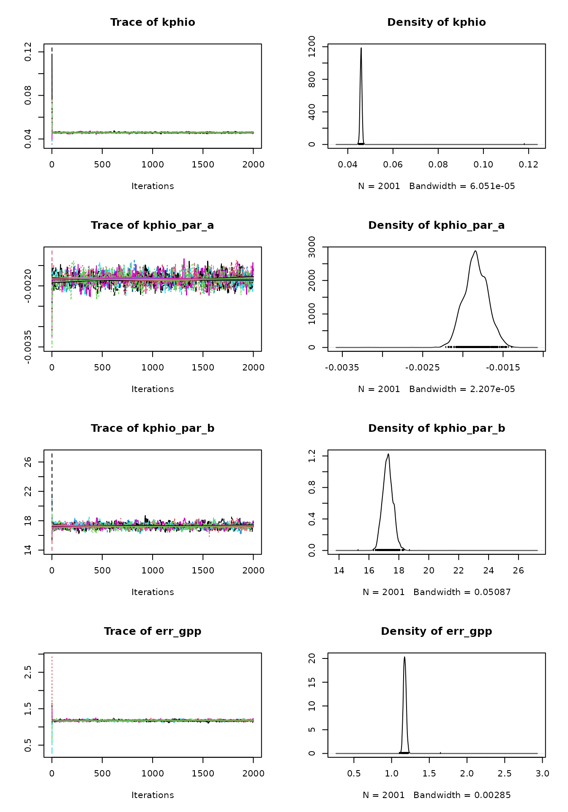
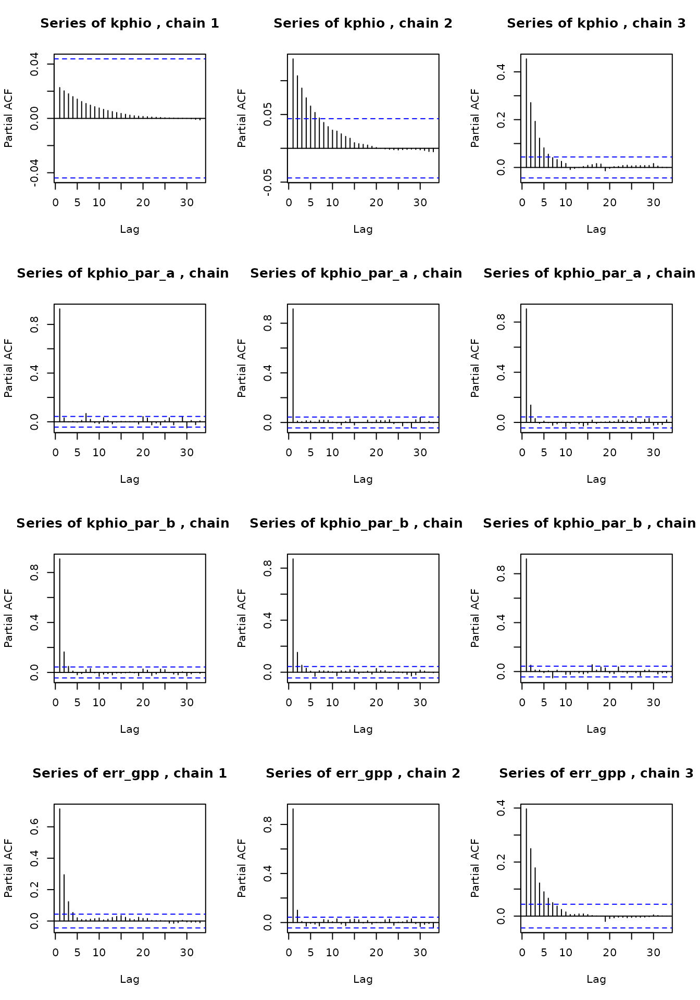
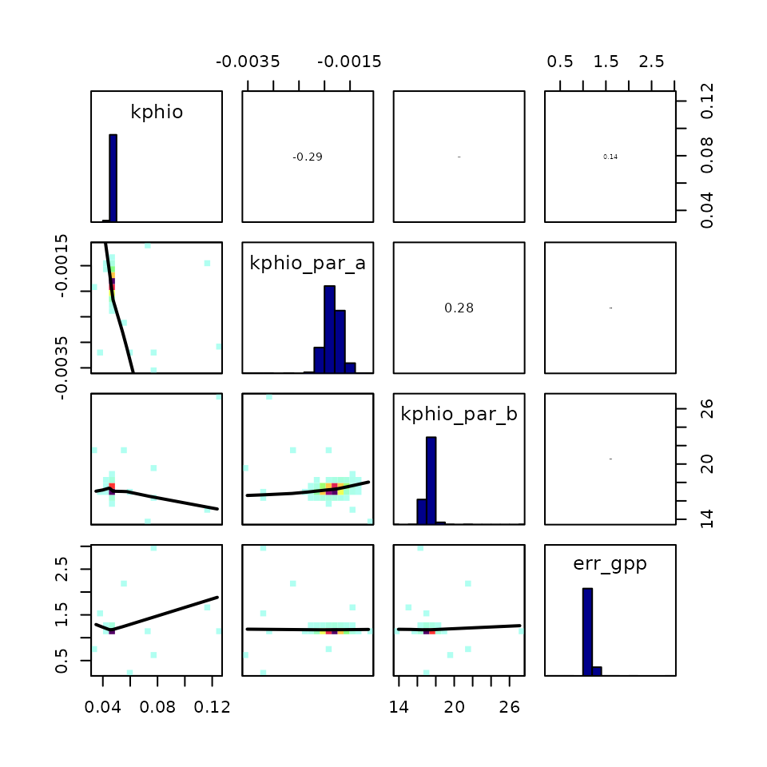

Sensitivity analysis and calibration interpretation
Josefa Arán
Source:vignettes/sensitivity_analysis.Rmd
sensitivity_analysis.RmdParameter calibration can have a big impact on our modeling effort
and use big computational resources. Hence, it is worth our time to
explore which parameters should actually be calibrated (the ones that
impact the simulations greatly) and to examine if the calibration
routines behave as expected. This vignette explains how to perform a
simple parameter sensitivity analysis for the P-model and how to
interpret the outputs of the calibration using the
BayesianTools package.
Morris sensitivity analysis
The Morris method for global sensitivity analysis allows to explore which parameters have the biggest influence on the model fit. In this example, we will quantify how different values of the calibratable model parameters lead to more variability in the match between GPP predicted by the P-model and GPP observations. It would be wise to repeat this exercise for various targets because they may be simulated by equations in the P-model that involve different model parameters.
If the P-model has very low sensitivity to a certain parameter, calibrating it will not improve the model substantially. But if it’s very sensitive to another parameter, calibrating this second parameter could improve the P-model fit greatly. We should spend our computational resources on calibrating the parameters to which the model is most sensitive.
First of all, let’s define a function which measures the agreement between GPP predictions from the P-model and GPP observations, for a set of values of the calibratable parameters. It computes the normal log-likelihood of the GPP predictions, given the observed GPP and its uncertainty. We want to see how sensitive this function is to changes in the parameter values.
# Define log-likelihood function
ll_pmodel <- function(
par_v # a vector of all calibratable parameters including errors
){
rsofun::cost_likelihood_pmodel( # reuse likelihood cost function
par_v,
obs = rsofun::p_model_validation,
drivers = rsofun::p_model_drivers,
targets = "gpp"
)
}
# Compute log-likelihood for a given set of parameters
ll_pmodel( par_v = c(
kphio = 0.09423773, # setup ORG in Stocker et al. 2020 GMD
kphio_par_a = 0.0, # set to zero to disable temperature-dependence of kphio, setup ORG in Stocker et al. 2020 GMD
kphio_par_b = 1.0,
soilm_thetastar = 0.6 * 240, # to recover old setup with soil moisture stress
soilm_betao = 0.0,
beta_unitcostratio = 146.0,
rd_to_vcmax = 0.014, # value from Atkin et al. 2015 for C3 herbaceous
tau_acclim = 30.0,
kc_jmax = 0.41,
error_gpp = 0.9 # value from previous simulations
))
#> [1] -56672.71Some parameters are constrained by their physical interpretation
(e.g. kphio > 0) and it’s also necessary to provide a
bounded parameter space for Morris’ method to sample the parameter
space. We define the parameter space by their lower and upper
bounds.
# best parameter values (from previous literature)
par_cal_best <- c(
kphio = 0.09423773,
kphio_par_a = 0.1,
kphio_par_b = 25,
soilm_thetastar = 0.6*240,
soilm_betao = 0.2,
beta_unitcostratio = 146.0,
rd_to_vcmax = 0.014,
tau_acclim = 30.0,
kc_jmax = 0.41,
error_gpp = 1
)
# lower bound
par_cal_min <- c(
kphio = 0.0,
kphio_par_a = -0.2,
kphio_par_b = 10,
soilm_thetastar = 0,
soilm_betao = 0,
beta_unitcostratio = 50.0,
rd_to_vcmax = 0.01,
tau_acclim = 7.0,
kc_jmax = 0.2,
error_gpp = 0.01
)
# upper bound
par_cal_max <- c(
kphio = 5.0,
kphio_par_a = 0.5,
kphio_par_b = 40.0,
soilm_thetastar = 3000,
soilm_betao = 1,
beta_unitcostratio = 200.0,
rd_to_vcmax = 0.1,
tau_acclim = 60.0,
kc_jmax = 0.8,
error_gpp = 4
)We use the morris() function from the
{sensitivity} package to perform the sensitivity analysis.
As a target function, we will use the posterior density (log-likelihood)
of the parameters given the GPP data which we obtain via the function
BayesianTools::createBayesianSetup(). Note that, because of
using a uniform prior, the posterior distribution is proportional to the
GPP log-likelihood (defined previously) wherever the parameter values
are feasible and zero outside of the parameter ranges.
morris_setup <- BayesianTools::createBayesianSetup(
likelihood = ll_pmodel,
prior = BayesianTools::createUniformPrior(par_cal_min, par_cal_max, par_cal_best),
names = names(par_cal_best)
)In the following chunk, we run the Morris sensitivity analysis, using
a grid with r=500 values for each parameter and a
one-at-a-time design. Running the sensitivity analysis may take a few
minutes, even for this small example dataset, and is still
computationally cheaper than running the parameter calibration.
set.seed(432)
morrisOut <- sensitivity::morris(
model = morris_setup$posterior$density,
factors = names(par_cal_best),
r = 1000,
design = list(type = "oat", levels = 20, grid.jump = 3),
binf = par_cal_min,
bsup = par_cal_max,
scale = TRUE)The analysis evaluates the variability of the target function, i.e. the log-likelihood, for several points across the parameter space. It is an approximation of the derivatives of the log-likelihood with respect to the model parameters. Statistics \(\mu *\) and \(\sigma\) can be interpreted as the mean absolute derivative and the standard deviation of the derivative, respectively. The higher the value of these statistics for a given parameter, the more influential the parameter is.
# summarise the morris output
morrisOut.df <- data.frame(
parameter = names(par_cal_best),
mu.star = apply(abs(morrisOut$ee), 2, mean, na.rm = T),
sigma = apply(morrisOut$ee, 2, sd, na.rm = T)
) %>%
arrange( mu.star )
morrisOut.df |>
tidyr::pivot_longer( -parameter, names_to = "variable", values_to = "value") |>
ggplot(aes(
reorder(parameter, value),
value,
fill = variable),
color = NA) +
geom_bar(position = position_dodge(), stat = 'identity') +
scale_fill_brewer("", labels = c('mu.star' = expression(mu * "*"),
'sigma' = expression(sigma))) +
theme_classic() +
theme(
axis.text = element_text(size = 6),
axis.title = element_blank(),
legend.position = c(0.05, 0.95), legend.justification = c(0.05, 0.95)
)
The outcome of the Morris sensitivity analysis depends strongly on
the choice of parameter ranges and how parameters interact with each
other in the underlying model. In this example, we constrained the
parameters based on their physical meaning
(e.g. soilm_betao should be in [0,1]) and the
site FR-Pue where the data is coming from (e.g. kphio_par_b
around 25\(^{o}\)C). When observing the
figure above, we notice that parameters kphio_par_a and
kphio_par_b have a high impact on the model fit (big \(\mu *\)), but also this dependence of GPP
on the two parameters changes across the parameter space (big \(\sigma\)). This happens because they
interact in the temperature dependence function for the quantum yield
efficiency, and they will probably be hard to calibrate and also require
data from multiple sites.
To help you interpret this sensitivity analysis, it may be wise to
run it several times for different parameter ranges and validation data.
Note how rd_to_vcmax does not affect GPP, but it would
actually affect the quality of Vcmax25 predictions.
Interpretation of Bayesian calibration routine
It is always important to check the convergence of the MCMC algorithm used for the Bayesian calibration. Here we show some plots and statistics that may help you assess whether the parameter calibration has converged.
According to the previous sensitivity analysis, calibrating the error parameter for GPP and the Jmax cost ratio parameters will have the most impact on the model fit. Let’s run the calibration:
set.seed(2023)
# Define calibration settings
settings_calib <- list(
method = "BayesianTools",
metric = rsofun::cost_likelihood_pmodel,
control = list(
sampler = "DEzs",
settings = list(
burnin = 300,
iterations = 3000,
startValue = 3 # number of chains to be sampled
)),
par = list(
kc_jmax = list(lower = 0.2, upper = 0.8, init = 0.41),
err_gpp = list(lower = 0.1, upper = 3, init = 0.8)
)
)
# calibrate parameters kc_jmax and err_gpp
par_calib <- calib_sofun(
drivers = p_model_drivers,
obs = p_model_validation,
settings = settings_calib,
par_fixed = list(
kphio = 0.05,
kphio_par_a = -0.00005,
kphio_par_b = 33,
soilm_thetastar = 0.6*240,
soilm_betao = 0.2,
beta_unitcostratio = 146.0,
rd_to_vcmax = 0.014,
tau_acclim = 30.0),
targets = "gpp"
)BayesianTools makes it easy to produce the trace plot of
the MCMC chains and the posterior density plot for the parameters. Trace
plots show the time series of the sampled chains, which should reach a
stationary state. One can also choose a burnin visually, to discard the
early iterations and keep only the samples from the stationary
distribution to which they converge (we set above). The samples after
the burnin period are then used for inference.
# par(mar = c(2,2,2,2))
plot(par_calib$mod)
The posterior density plots may be lumpy. In this case it’s advisable to run the MCMC algorithm for more iterations, in order to get a better estimate of the parameters’ posterior distributions. A good posterior should look more gaussian (although it can be skewed). A multimodal density indicates that the MCMC is still exploring the parameter space and hasn’t converged yet.
When convergence has been reached, the oscillation of the time series should look like white noise. The presence of a trend indicates that convergence hasn’t been reached.
Trace plots can be deceiving and partial autocorrelation plots can throw some light. If autocorrelation is present, this can mean that the sampling is stuck in local maxima and the posterior parameter space may not be explored fully.
# Define function for plotting chains separately
plot_acf_mcmc <- function(chains, par_names){
# chains: from the BayesianTools output
n_chains <- length(chains)
par(mfrow = c(length(par_names), n_chains))
for(par_name in par_names){
for(i in 1:n_chains){
chains[[i]][, par_name] |>
pacf(main = paste0("Series of ", par_name, " , chain ", i))
}
}
}
plot_acf_mcmc(par_calib$mod$chain, c("err_gpp", "kc_jmax"))
Looking at the correlation between chains is also helpful because parameter correlation may slow down convergence, or the chains may oscillate in the multivariate posterior space. Here the correlation is very small and we saw above that the chains reached a stationary distribution quite quickly.
correlationPlot(par_calib$mod)
In addition to visualizations, it’s helpful to compute some convergence diagnostics, like the Gelman-Brooks-Rubin (GBR) “potential scale factor” (psf). This diagnostic compares the variance within chains to that across chains and should progressively get closer to 1. It is common in the literature to accept a GBR between 1.05 and 1.1, indicating convergence.
We use the summary function from the
BayesianTools library, which shows the psf next to other
parameter estimations. Finally, the parameter MAP estimates can be
derived from the chains (that converged) after removing the burnin
period.
summary(par_calib$mod)
#> # # # # # # # # # # # # # # # # # # # # # # # # #
#> ## MCMC chain summary ##
#> # # # # # # # # # # # # # # # # # # # # # # # # #
#>
#> # MCMC sampler: DEzs
#> # Nr. Chains: 3
#> # Iterations per chain: 901
#> # Rejection rate: 0.822
#> # Effective sample size: 318
#> # Runtime: 106.717 sec.
#>
#> # Parameters
#> psf MAP 2.5% median 97.5%
#> kc_jmax 1.020 0.467 0.458 0.467 0.487
#> err_gpp 1.037 1.492 1.449 1.496 1.542
#>
#> ## DIC: 9096.043
#> ## Convergence
#> Gelman Rubin multivariate psrf:
#>
#> ## Correlations
#> kc_jmax err_gpp
#> kc_jmax 1.000 0.165
#> err_gpp 0.165 1.000More details on diagnosing MCMC convergence can be found in this vignette from BayesianTools and this blogpost.
Finally, let’s see how the model performs.
# Sample kc_jmax values from the posterior distribution
samples_kc_jmax <- getSample(par_calib$mod,
thin = 300, # get every 10th sample
whichParameters = 1, # ignore error_gpp
start = 100) # remove burnin
# Run the P-model to get the posterior GPP predictions
pmodel_runs <- lapply(samples_kc_jmax, function(kc){
out <- runread_pmodel_f(
drivers = p_model_drivers,
par = list( # copied from par_fixed above
kphio = 0.05,
kphio_par_a = -0.00005,
kphio_par_b = 33,
soilm_thetastar = 0.6*240,
soilm_betao = 0.2,
beta_unitcostratio = 146.0,
rd_to_vcmax = 0.014,
tau_acclim = 30.0,
kc_jmax = kc) # value from posterior
)
out$data[[1]][, c("date", "gpp")] # return gpp prediction and date
})
# Plot first year of P-model runs
validation_data <- p_model_validation$data[[1]]
posterior_plot <- ggplot() +
geom_line(
data = validation_data[1:365,],
aes(date, gpp),
alpha = 0.8
) +
labs(
x = "Date",
y = "GPP"
)
for(run in seq_along(pmodel_runs)){
posterior_plot <- posterior_plot +
geom_line(
data = pmodel_runs[[run]][1:365,],
aes(date, gpp),
alpha = 0.1,
color = 'blue'
)
}
posterior_plotFor simplicity, we plot the predicted GPP using the maximum a
posteriori estimate for kc_jmax with a 90% credible
interval based on the assumption that the predicted GPP follows a normal
distribution with standard deviation err_gpp, which we have
also estimated. This gives a range that covers the observed GPP in 90%
of the cases.
ggplot(data = runread_pmodel_f(
drivers = p_model_drivers,
par = list( # copied from par_fixed above
kphio = 0.05,
kphio_par_a = -0.00005,
kphio_par_b = 33,
soilm_thetastar = 0.6*240,
soilm_betao = 0.2,
beta_unitcostratio = 146.0,
rd_to_vcmax = 0.014,
tau_acclim = 30.0,
kc_jmax = par_calib$par[1]) # value from posterior
) |>
dplyr::select(sitename, data) |>
tidyr::unnest(data) |>
dplyr::slice(1:750)) +
geom_line(aes(
date,
gpp
),
colour = "red",
alpha = 0.8
) +
geom_errorbar(
aes(x = date, ymin=gpp - 2*par_calib$par[2], # should cover ~ 95% of observations
ymax=gpp + 2*par_calib$par[2]), width=.2,
position=position_dodge(0.05),
color = 'red', alpha = 0.5) +
geom_line(
data = validation_data[1:750, ],
aes(
date,
gpp
),
alpha = 0.8
) +
geom_errorbar(
data = validation_data[1:750, ],
aes(x = date, ymin=gpp - 2*gpp_unc, ymax=gpp + 2*gpp_unc), width=.2,
position=position_dodge(0.05)) +
labs(
x = "Date",
y = "GPP"
)
# See max and min GPP predictions
gpp <- data.frame(date = pmodel_runs[[1]]$date)
for(run in seq_along(pmodel_runs)){
gpp <- left_join(gpp, pmodel_runs[[run]],
by = join_by(date))
}
colnames(gpp) <- c("date", paste0("gpp", 1:length(pmodel_runs)))
gpp |>
mutate(gpp_min = min(gpp1, gpp2, gpp3, gpp4, gpp5, gpp6, gpp7,
gpp8, gpp9),
gpp_max = max(gpp1, gpp2, gpp3, gpp4, gpp5, gpp6, gpp7,
gpp8, gpp9)) |>
select(date, gpp_min, gpp_max)
#> date gpp_min gpp_max
#> 1 2007-01-01 0 9.887171
#> 2 2007-01-02 0 9.887171
#> 3 2007-01-03 0 9.887171
#> 4 2007-01-04 0 9.887171
#> 5 2007-01-05 0 9.887171
#> 6 2007-01-06 0 9.887171
#> 7 2007-01-07 0 9.887171
#> 8 2007-01-08 0 9.887171
#> 9 2007-01-09 0 9.887171
#> 10 2007-01-10 0 9.887171
#> 11 2007-01-11 0 9.887171
#> 12 2007-01-12 0 9.887171
#> 13 2007-01-13 0 9.887171
#> 14 2007-01-14 0 9.887171
#> 15 2007-01-15 0 9.887171
#> 16 2007-01-16 0 9.887171
#> 17 2007-01-17 0 9.887171
#> 18 2007-01-18 0 9.887171
#> 19 2007-01-19 0 9.887171
#> 20 2007-01-20 0 9.887171
#> 21 2007-01-21 0 9.887171
#> 22 2007-01-22 0 9.887171
#> 23 2007-01-23 0 9.887171
#> 24 2007-01-24 0 9.887171
#> 25 2007-01-25 0 9.887171
#> 26 2007-01-26 0 9.887171
#> 27 2007-01-27 0 9.887171
#> 28 2007-01-28 0 9.887171
#> 29 2007-01-29 0 9.887171
#> 30 2007-01-30 0 9.887171
#> 31 2007-01-31 0 9.887171
#> 32 2007-02-01 0 9.887171
#> 33 2007-02-02 0 9.887171
#> 34 2007-02-03 0 9.887171
#> 35 2007-02-04 0 9.887171
#> 36 2007-02-05 0 9.887171
#> 37 2007-02-06 0 9.887171
#> 38 2007-02-07 0 9.887171
#> 39 2007-02-08 0 9.887171
#> 40 2007-02-09 0 9.887171
#> 41 2007-02-10 0 9.887171
#> 42 2007-02-11 0 9.887171
#> 43 2007-02-12 0 9.887171
#> 44 2007-02-13 0 9.887171
#> 45 2007-02-14 0 9.887171
#> 46 2007-02-15 0 9.887171
#> 47 2007-02-16 0 9.887171
#> 48 2007-02-17 0 9.887171
#> 49 2007-02-18 0 9.887171
#> 50 2007-02-19 0 9.887171
#> 51 2007-02-20 0 9.887171
#> 52 2007-02-21 0 9.887171
#> 53 2007-02-22 0 9.887171
#> 54 2007-02-23 0 9.887171
#> 55 2007-02-24 0 9.887171
#> 56 2007-02-25 0 9.887171
#> 57 2007-02-26 0 9.887171
#> 58 2007-02-27 0 9.887171
#> 59 2007-02-28 0 9.887171
#> 60 2007-03-01 0 9.887171
#> 61 2007-03-02 0 9.887171
#> 62 2007-03-03 0 9.887171
#> 63 2007-03-04 0 9.887171
#> 64 2007-03-05 0 9.887171
#> 65 2007-03-06 0 9.887171
#> 66 2007-03-07 0 9.887171
#> 67 2007-03-08 0 9.887171
#> 68 2007-03-09 0 9.887171
#> 69 2007-03-10 0 9.887171
#> 70 2007-03-11 0 9.887171
#> 71 2007-03-12 0 9.887171
#> 72 2007-03-13 0 9.887171
#> 73 2007-03-14 0 9.887171
#> 74 2007-03-15 0 9.887171
#> 75 2007-03-16 0 9.887171
#> 76 2007-03-17 0 9.887171
#> 77 2007-03-18 0 9.887171
#> 78 2007-03-19 0 9.887171
#> 79 2007-03-20 0 9.887171
#> 80 2007-03-21 0 9.887171
#> 81 2007-03-22 0 9.887171
#> 82 2007-03-23 0 9.887171
#> 83 2007-03-24 0 9.887171
#> 84 2007-03-25 0 9.887171
#> 85 2007-03-26 0 9.887171
#> 86 2007-03-27 0 9.887171
#> 87 2007-03-28 0 9.887171
#> 88 2007-03-29 0 9.887171
#> 89 2007-03-30 0 9.887171
#> 90 2007-03-31 0 9.887171
#> 91 2007-04-01 0 9.887171
#> 92 2007-04-02 0 9.887171
#> 93 2007-04-03 0 9.887171
#> 94 2007-04-04 0 9.887171
#> 95 2007-04-05 0 9.887171
#> 96 2007-04-06 0 9.887171
#> 97 2007-04-07 0 9.887171
#> 98 2007-04-08 0 9.887171
#> 99 2007-04-09 0 9.887171
#> 100 2007-04-10 0 9.887171
#> 101 2007-04-11 0 9.887171
#> 102 2007-04-12 0 9.887171
#> 103 2007-04-13 0 9.887171
#> 104 2007-04-14 0 9.887171
#> 105 2007-04-15 0 9.887171
#> 106 2007-04-16 0 9.887171
#> 107 2007-04-17 0 9.887171
#> 108 2007-04-18 0 9.887171
#> 109 2007-04-19 0 9.887171
#> 110 2007-04-20 0 9.887171
#> 111 2007-04-21 0 9.887171
#> 112 2007-04-22 0 9.887171
#> 113 2007-04-23 0 9.887171
#> 114 2007-04-24 0 9.887171
#> 115 2007-04-25 0 9.887171
#> 116 2007-04-26 0 9.887171
#> 117 2007-04-27 0 9.887171
#> 118 2007-04-28 0 9.887171
#> 119 2007-04-29 0 9.887171
#> 120 2007-04-30 0 9.887171
#> 121 2007-05-01 0 9.887171
#> 122 2007-05-02 0 9.887171
#> 123 2007-05-03 0 9.887171
#> 124 2007-05-04 0 9.887171
#> 125 2007-05-05 0 9.887171
#> 126 2007-05-06 0 9.887171
#> 127 2007-05-07 0 9.887171
#> 128 2007-05-08 0 9.887171
#> 129 2007-05-09 0 9.887171
#> 130 2007-05-10 0 9.887171
#> 131 2007-05-11 0 9.887171
#> 132 2007-05-12 0 9.887171
#> 133 2007-05-13 0 9.887171
#> 134 2007-05-14 0 9.887171
#> 135 2007-05-15 0 9.887171
#> 136 2007-05-16 0 9.887171
#> 137 2007-05-17 0 9.887171
#> 138 2007-05-18 0 9.887171
#> 139 2007-05-19 0 9.887171
#> 140 2007-05-20 0 9.887171
#> 141 2007-05-21 0 9.887171
#> 142 2007-05-22 0 9.887171
#> 143 2007-05-23 0 9.887171
#> 144 2007-05-24 0 9.887171
#> 145 2007-05-25 0 9.887171
#> 146 2007-05-26 0 9.887171
#> 147 2007-05-27 0 9.887171
#> 148 2007-05-28 0 9.887171
#> 149 2007-05-29 0 9.887171
#> 150 2007-05-30 0 9.887171
#> 151 2007-05-31 0 9.887171
#> 152 2007-06-01 0 9.887171
#> 153 2007-06-02 0 9.887171
#> 154 2007-06-03 0 9.887171
#> 155 2007-06-04 0 9.887171
#> 156 2007-06-05 0 9.887171
#> 157 2007-06-06 0 9.887171
#> 158 2007-06-07 0 9.887171
#> 159 2007-06-08 0 9.887171
#> 160 2007-06-09 0 9.887171
#> 161 2007-06-10 0 9.887171
#> 162 2007-06-11 0 9.887171
#> 163 2007-06-12 0 9.887171
#> 164 2007-06-13 0 9.887171
#> 165 2007-06-14 0 9.887171
#> 166 2007-06-15 0 9.887171
#> 167 2007-06-16 0 9.887171
#> 168 2007-06-17 0 9.887171
#> 169 2007-06-18 0 9.887171
#> 170 2007-06-19 0 9.887171
#> 171 2007-06-20 0 9.887171
#> 172 2007-06-21 0 9.887171
#> 173 2007-06-22 0 9.887171
#> 174 2007-06-23 0 9.887171
#> 175 2007-06-24 0 9.887171
#> 176 2007-06-25 0 9.887171
#> 177 2007-06-26 0 9.887171
#> 178 2007-06-27 0 9.887171
#> 179 2007-06-28 0 9.887171
#> 180 2007-06-29 0 9.887171
#> 181 2007-06-30 0 9.887171
#> 182 2007-07-01 0 9.887171
#> 183 2007-07-02 0 9.887171
#> 184 2007-07-03 0 9.887171
#> 185 2007-07-04 0 9.887171
#> 186 2007-07-05 0 9.887171
#> 187 2007-07-06 0 9.887171
#> 188 2007-07-07 0 9.887171
#> 189 2007-07-08 0 9.887171
#> 190 2007-07-09 0 9.887171
#> 191 2007-07-10 0 9.887171
#> 192 2007-07-11 0 9.887171
#> 193 2007-07-12 0 9.887171
#> 194 2007-07-13 0 9.887171
#> 195 2007-07-14 0 9.887171
#> 196 2007-07-15 0 9.887171
#> 197 2007-07-16 0 9.887171
#> 198 2007-07-17 0 9.887171
#> 199 2007-07-18 0 9.887171
#> 200 2007-07-19 0 9.887171
#> 201 2007-07-20 0 9.887171
#> 202 2007-07-21 0 9.887171
#> 203 2007-07-22 0 9.887171
#> 204 2007-07-23 0 9.887171
#> 205 2007-07-24 0 9.887171
#> 206 2007-07-25 0 9.887171
#> 207 2007-07-26 0 9.887171
#> 208 2007-07-27 0 9.887171
#> 209 2007-07-28 0 9.887171
#> 210 2007-07-29 0 9.887171
#> 211 2007-07-30 0 9.887171
#> 212 2007-07-31 0 9.887171
#> 213 2007-08-01 0 9.887171
#> 214 2007-08-02 0 9.887171
#> 215 2007-08-03 0 9.887171
#> 216 2007-08-04 0 9.887171
#> 217 2007-08-05 0 9.887171
#> 218 2007-08-06 0 9.887171
#> 219 2007-08-07 0 9.887171
#> 220 2007-08-08 0 9.887171
#> 221 2007-08-09 0 9.887171
#> 222 2007-08-10 0 9.887171
#> 223 2007-08-11 0 9.887171
#> 224 2007-08-12 0 9.887171
#> 225 2007-08-13 0 9.887171
#> 226 2007-08-14 0 9.887171
#> 227 2007-08-15 0 9.887171
#> 228 2007-08-16 0 9.887171
#> 229 2007-08-17 0 9.887171
#> 230 2007-08-18 0 9.887171
#> 231 2007-08-19 0 9.887171
#> 232 2007-08-20 0 9.887171
#> 233 2007-08-21 0 9.887171
#> 234 2007-08-22 0 9.887171
#> 235 2007-08-23 0 9.887171
#> 236 2007-08-24 0 9.887171
#> 237 2007-08-25 0 9.887171
#> 238 2007-08-26 0 9.887171
#> 239 2007-08-27 0 9.887171
#> 240 2007-08-28 0 9.887171
#> 241 2007-08-29 0 9.887171
#> 242 2007-08-30 0 9.887171
#> 243 2007-08-31 0 9.887171
#> 244 2007-09-01 0 9.887171
#> 245 2007-09-02 0 9.887171
#> 246 2007-09-03 0 9.887171
#> 247 2007-09-04 0 9.887171
#> 248 2007-09-05 0 9.887171
#> 249 2007-09-06 0 9.887171
#> 250 2007-09-07 0 9.887171
#> 251 2007-09-08 0 9.887171
#> 252 2007-09-09 0 9.887171
#> 253 2007-09-10 0 9.887171
#> 254 2007-09-11 0 9.887171
#> 255 2007-09-12 0 9.887171
#> 256 2007-09-13 0 9.887171
#> 257 2007-09-14 0 9.887171
#> 258 2007-09-15 0 9.887171
#> 259 2007-09-16 0 9.887171
#> 260 2007-09-17 0 9.887171
#> 261 2007-09-18 0 9.887171
#> 262 2007-09-19 0 9.887171
#> 263 2007-09-20 0 9.887171
#> 264 2007-09-21 0 9.887171
#> 265 2007-09-22 0 9.887171
#> 266 2007-09-23 0 9.887171
#> 267 2007-09-24 0 9.887171
#> 268 2007-09-25 0 9.887171
#> 269 2007-09-26 0 9.887171
#> 270 2007-09-27 0 9.887171
#> 271 2007-09-28 0 9.887171
#> 272 2007-09-29 0 9.887171
#> 273 2007-09-30 0 9.887171
#> 274 2007-10-01 0 9.887171
#> 275 2007-10-02 0 9.887171
#> 276 2007-10-03 0 9.887171
#> 277 2007-10-04 0 9.887171
#> 278 2007-10-05 0 9.887171
#> 279 2007-10-06 0 9.887171
#> 280 2007-10-07 0 9.887171
#> 281 2007-10-08 0 9.887171
#> 282 2007-10-09 0 9.887171
#> 283 2007-10-10 0 9.887171
#> 284 2007-10-11 0 9.887171
#> 285 2007-10-12 0 9.887171
#> 286 2007-10-13 0 9.887171
#> 287 2007-10-14 0 9.887171
#> 288 2007-10-15 0 9.887171
#> 289 2007-10-16 0 9.887171
#> 290 2007-10-17 0 9.887171
#> 291 2007-10-18 0 9.887171
#> 292 2007-10-19 0 9.887171
#> 293 2007-10-20 0 9.887171
#> 294 2007-10-21 0 9.887171
#> 295 2007-10-22 0 9.887171
#> 296 2007-10-23 0 9.887171
#> 297 2007-10-24 0 9.887171
#> 298 2007-10-25 0 9.887171
#> 299 2007-10-26 0 9.887171
#> 300 2007-10-27 0 9.887171
#> 301 2007-10-28 0 9.887171
#> 302 2007-10-29 0 9.887171
#> 303 2007-10-30 0 9.887171
#> 304 2007-10-31 0 9.887171
#> 305 2007-11-01 0 9.887171
#> 306 2007-11-02 0 9.887171
#> 307 2007-11-03 0 9.887171
#> 308 2007-11-04 0 9.887171
#> 309 2007-11-05 0 9.887171
#> 310 2007-11-06 0 9.887171
#> 311 2007-11-07 0 9.887171
#> 312 2007-11-08 0 9.887171
#> 313 2007-11-09 0 9.887171
#> 314 2007-11-10 0 9.887171
#> 315 2007-11-11 0 9.887171
#> 316 2007-11-12 0 9.887171
#> 317 2007-11-13 0 9.887171
#> 318 2007-11-14 0 9.887171
#> 319 2007-11-15 0 9.887171
#> 320 2007-11-16 0 9.887171
#> 321 2007-11-17 0 9.887171
#> 322 2007-11-18 0 9.887171
#> 323 2007-11-19 0 9.887171
#> 324 2007-11-20 0 9.887171
#> 325 2007-11-21 0 9.887171
#> 326 2007-11-22 0 9.887171
#> 327 2007-11-23 0 9.887171
#> 328 2007-11-24 0 9.887171
#> 329 2007-11-25 0 9.887171
#> 330 2007-11-26 0 9.887171
#> 331 2007-11-27 0 9.887171
#> 332 2007-11-28 0 9.887171
#> 333 2007-11-29 0 9.887171
#> 334 2007-11-30 0 9.887171
#> 335 2007-12-01 0 9.887171
#> 336 2007-12-02 0 9.887171
#> 337 2007-12-03 0 9.887171
#> 338 2007-12-04 0 9.887171
#> 339 2007-12-05 0 9.887171
#> 340 2007-12-06 0 9.887171
#> 341 2007-12-07 0 9.887171
#> 342 2007-12-08 0 9.887171
#> 343 2007-12-09 0 9.887171
#> 344 2007-12-10 0 9.887171
#> 345 2007-12-11 0 9.887171
#> 346 2007-12-12 0 9.887171
#> 347 2007-12-13 0 9.887171
#> 348 2007-12-14 0 9.887171
#> 349 2007-12-15 0 9.887171
#> 350 2007-12-16 0 9.887171
#> 351 2007-12-17 0 9.887171
#> 352 2007-12-18 0 9.887171
#> 353 2007-12-19 0 9.887171
#> 354 2007-12-20 0 9.887171
#> 355 2007-12-21 0 9.887171
#> 356 2007-12-22 0 9.887171
#> 357 2007-12-23 0 9.887171
#> 358 2007-12-24 0 9.887171
#> 359 2007-12-25 0 9.887171
#> 360 2007-12-26 0 9.887171
#> 361 2007-12-27 0 9.887171
#> 362 2007-12-28 0 9.887171
#> 363 2007-12-29 0 9.887171
#> 364 2007-12-30 0 9.887171
#> 365 2007-12-31 0 9.887171
#> 366 2008-01-01 0 9.887171
#> 367 2008-01-02 0 9.887171
#> 368 2008-01-03 0 9.887171
#> 369 2008-01-04 0 9.887171
#> 370 2008-01-05 0 9.887171
#> 371 2008-01-06 0 9.887171
#> 372 2008-01-07 0 9.887171
#> 373 2008-01-08 0 9.887171
#> 374 2008-01-09 0 9.887171
#> 375 2008-01-10 0 9.887171
#> 376 2008-01-11 0 9.887171
#> 377 2008-01-12 0 9.887171
#> 378 2008-01-13 0 9.887171
#> 379 2008-01-14 0 9.887171
#> 380 2008-01-15 0 9.887171
#> 381 2008-01-16 0 9.887171
#> 382 2008-01-17 0 9.887171
#> 383 2008-01-18 0 9.887171
#> 384 2008-01-19 0 9.887171
#> 385 2008-01-20 0 9.887171
#> 386 2008-01-21 0 9.887171
#> 387 2008-01-22 0 9.887171
#> 388 2008-01-23 0 9.887171
#> 389 2008-01-24 0 9.887171
#> 390 2008-01-25 0 9.887171
#> 391 2008-01-26 0 9.887171
#> 392 2008-01-27 0 9.887171
#> 393 2008-01-28 0 9.887171
#> 394 2008-01-29 0 9.887171
#> 395 2008-01-30 0 9.887171
#> 396 2008-01-31 0 9.887171
#> 397 2008-02-01 0 9.887171
#> 398 2008-02-02 0 9.887171
#> 399 2008-02-03 0 9.887171
#> 400 2008-02-04 0 9.887171
#> 401 2008-02-05 0 9.887171
#> 402 2008-02-06 0 9.887171
#> 403 2008-02-07 0 9.887171
#> 404 2008-02-08 0 9.887171
#> 405 2008-02-09 0 9.887171
#> 406 2008-02-10 0 9.887171
#> 407 2008-02-11 0 9.887171
#> 408 2008-02-12 0 9.887171
#> 409 2008-02-13 0 9.887171
#> 410 2008-02-14 0 9.887171
#> 411 2008-02-15 0 9.887171
#> 412 2008-02-16 0 9.887171
#> 413 2008-02-17 0 9.887171
#> 414 2008-02-18 0 9.887171
#> 415 2008-02-19 0 9.887171
#> 416 2008-02-20 0 9.887171
#> 417 2008-02-21 0 9.887171
#> 418 2008-02-22 0 9.887171
#> 419 2008-02-23 0 9.887171
#> 420 2008-02-24 0 9.887171
#> 421 2008-02-25 0 9.887171
#> 422 2008-02-26 0 9.887171
#> 423 2008-02-27 0 9.887171
#> 424 2008-02-28 0 9.887171
#> 425 2008-03-01 0 9.887171
#> 426 2008-03-02 0 9.887171
#> 427 2008-03-03 0 9.887171
#> 428 2008-03-04 0 9.887171
#> 429 2008-03-05 0 9.887171
#> 430 2008-03-06 0 9.887171
#> 431 2008-03-07 0 9.887171
#> 432 2008-03-08 0 9.887171
#> 433 2008-03-09 0 9.887171
#> 434 2008-03-10 0 9.887171
#> 435 2008-03-11 0 9.887171
#> 436 2008-03-12 0 9.887171
#> 437 2008-03-13 0 9.887171
#> 438 2008-03-14 0 9.887171
#> 439 2008-03-15 0 9.887171
#> 440 2008-03-16 0 9.887171
#> 441 2008-03-17 0 9.887171
#> 442 2008-03-18 0 9.887171
#> 443 2008-03-19 0 9.887171
#> 444 2008-03-20 0 9.887171
#> 445 2008-03-21 0 9.887171
#> 446 2008-03-22 0 9.887171
#> 447 2008-03-23 0 9.887171
#> 448 2008-03-24 0 9.887171
#> 449 2008-03-25 0 9.887171
#> 450 2008-03-26 0 9.887171
#> 451 2008-03-27 0 9.887171
#> 452 2008-03-28 0 9.887171
#> 453 2008-03-29 0 9.887171
#> 454 2008-03-30 0 9.887171
#> 455 2008-03-31 0 9.887171
#> 456 2008-04-01 0 9.887171
#> 457 2008-04-02 0 9.887171
#> 458 2008-04-03 0 9.887171
#> 459 2008-04-04 0 9.887171
#> 460 2008-04-05 0 9.887171
#> 461 2008-04-06 0 9.887171
#> 462 2008-04-07 0 9.887171
#> 463 2008-04-08 0 9.887171
#> 464 2008-04-09 0 9.887171
#> 465 2008-04-10 0 9.887171
#> 466 2008-04-11 0 9.887171
#> 467 2008-04-12 0 9.887171
#> 468 2008-04-13 0 9.887171
#> 469 2008-04-14 0 9.887171
#> 470 2008-04-15 0 9.887171
#> 471 2008-04-16 0 9.887171
#> 472 2008-04-17 0 9.887171
#> 473 2008-04-18 0 9.887171
#> 474 2008-04-19 0 9.887171
#> 475 2008-04-20 0 9.887171
#> 476 2008-04-21 0 9.887171
#> 477 2008-04-22 0 9.887171
#> 478 2008-04-23 0 9.887171
#> 479 2008-04-24 0 9.887171
#> 480 2008-04-25 0 9.887171
#> 481 2008-04-26 0 9.887171
#> 482 2008-04-27 0 9.887171
#> 483 2008-04-28 0 9.887171
#> 484 2008-04-29 0 9.887171
#> 485 2008-04-30 0 9.887171
#> 486 2008-05-01 0 9.887171
#> 487 2008-05-02 0 9.887171
#> 488 2008-05-03 0 9.887171
#> 489 2008-05-04 0 9.887171
#> 490 2008-05-05 0 9.887171
#> 491 2008-05-06 0 9.887171
#> 492 2008-05-07 0 9.887171
#> 493 2008-05-08 0 9.887171
#> 494 2008-05-09 0 9.887171
#> 495 2008-05-10 0 9.887171
#> 496 2008-05-11 0 9.887171
#> 497 2008-05-12 0 9.887171
#> 498 2008-05-13 0 9.887171
#> 499 2008-05-14 0 9.887171
#> 500 2008-05-15 0 9.887171
#> 501 2008-05-16 0 9.887171
#> 502 2008-05-17 0 9.887171
#> 503 2008-05-18 0 9.887171
#> 504 2008-05-19 0 9.887171
#> 505 2008-05-20 0 9.887171
#> 506 2008-05-21 0 9.887171
#> 507 2008-05-22 0 9.887171
#> 508 2008-05-23 0 9.887171
#> 509 2008-05-24 0 9.887171
#> 510 2008-05-25 0 9.887171
#> 511 2008-05-26 0 9.887171
#> 512 2008-05-27 0 9.887171
#> 513 2008-05-28 0 9.887171
#> 514 2008-05-29 0 9.887171
#> 515 2008-05-30 0 9.887171
#> 516 2008-05-31 0 9.887171
#> 517 2008-06-01 0 9.887171
#> 518 2008-06-02 0 9.887171
#> 519 2008-06-03 0 9.887171
#> 520 2008-06-04 0 9.887171
#> 521 2008-06-05 0 9.887171
#> 522 2008-06-06 0 9.887171
#> 523 2008-06-07 0 9.887171
#> 524 2008-06-08 0 9.887171
#> 525 2008-06-09 0 9.887171
#> 526 2008-06-10 0 9.887171
#> 527 2008-06-11 0 9.887171
#> 528 2008-06-12 0 9.887171
#> 529 2008-06-13 0 9.887171
#> 530 2008-06-14 0 9.887171
#> 531 2008-06-15 0 9.887171
#> 532 2008-06-16 0 9.887171
#> 533 2008-06-17 0 9.887171
#> 534 2008-06-18 0 9.887171
#> 535 2008-06-19 0 9.887171
#> 536 2008-06-20 0 9.887171
#> 537 2008-06-21 0 9.887171
#> 538 2008-06-22 0 9.887171
#> 539 2008-06-23 0 9.887171
#> 540 2008-06-24 0 9.887171
#> 541 2008-06-25 0 9.887171
#> 542 2008-06-26 0 9.887171
#> 543 2008-06-27 0 9.887171
#> 544 2008-06-28 0 9.887171
#> 545 2008-06-29 0 9.887171
#> 546 2008-06-30 0 9.887171
#> 547 2008-07-01 0 9.887171
#> 548 2008-07-02 0 9.887171
#> 549 2008-07-03 0 9.887171
#> 550 2008-07-04 0 9.887171
#> 551 2008-07-05 0 9.887171
#> 552 2008-07-06 0 9.887171
#> 553 2008-07-07 0 9.887171
#> 554 2008-07-08 0 9.887171
#> 555 2008-07-09 0 9.887171
#> 556 2008-07-10 0 9.887171
#> 557 2008-07-11 0 9.887171
#> 558 2008-07-12 0 9.887171
#> 559 2008-07-13 0 9.887171
#> 560 2008-07-14 0 9.887171
#> 561 2008-07-15 0 9.887171
#> 562 2008-07-16 0 9.887171
#> 563 2008-07-17 0 9.887171
#> 564 2008-07-18 0 9.887171
#> 565 2008-07-19 0 9.887171
#> 566 2008-07-20 0 9.887171
#> 567 2008-07-21 0 9.887171
#> 568 2008-07-22 0 9.887171
#> 569 2008-07-23 0 9.887171
#> 570 2008-07-24 0 9.887171
#> 571 2008-07-25 0 9.887171
#> 572 2008-07-26 0 9.887171
#> 573 2008-07-27 0 9.887171
#> 574 2008-07-28 0 9.887171
#> 575 2008-07-29 0 9.887171
#> 576 2008-07-30 0 9.887171
#> 577 2008-07-31 0 9.887171
#> 578 2008-08-01 0 9.887171
#> 579 2008-08-02 0 9.887171
#> 580 2008-08-03 0 9.887171
#> 581 2008-08-04 0 9.887171
#> 582 2008-08-05 0 9.887171
#> 583 2008-08-06 0 9.887171
#> 584 2008-08-07 0 9.887171
#> 585 2008-08-08 0 9.887171
#> 586 2008-08-09 0 9.887171
#> 587 2008-08-10 0 9.887171
#> 588 2008-08-11 0 9.887171
#> 589 2008-08-12 0 9.887171
#> 590 2008-08-13 0 9.887171
#> 591 2008-08-14 0 9.887171
#> 592 2008-08-15 0 9.887171
#> 593 2008-08-16 0 9.887171
#> 594 2008-08-17 0 9.887171
#> 595 2008-08-18 0 9.887171
#> 596 2008-08-19 0 9.887171
#> 597 2008-08-20 0 9.887171
#> 598 2008-08-21 0 9.887171
#> 599 2008-08-22 0 9.887171
#> 600 2008-08-23 0 9.887171
#> 601 2008-08-24 0 9.887171
#> 602 2008-08-25 0 9.887171
#> 603 2008-08-26 0 9.887171
#> 604 2008-08-27 0 9.887171
#> 605 2008-08-28 0 9.887171
#> 606 2008-08-29 0 9.887171
#> 607 2008-08-30 0 9.887171
#> 608 2008-08-31 0 9.887171
#> 609 2008-09-01 0 9.887171
#> 610 2008-09-02 0 9.887171
#> 611 2008-09-03 0 9.887171
#> 612 2008-09-04 0 9.887171
#> 613 2008-09-05 0 9.887171
#> 614 2008-09-06 0 9.887171
#> 615 2008-09-07 0 9.887171
#> 616 2008-09-08 0 9.887171
#> 617 2008-09-09 0 9.887171
#> 618 2008-09-10 0 9.887171
#> 619 2008-09-11 0 9.887171
#> 620 2008-09-12 0 9.887171
#> 621 2008-09-13 0 9.887171
#> 622 2008-09-14 0 9.887171
#> 623 2008-09-15 0 9.887171
#> 624 2008-09-16 0 9.887171
#> 625 2008-09-17 0 9.887171
#> 626 2008-09-18 0 9.887171
#> 627 2008-09-19 0 9.887171
#> 628 2008-09-20 0 9.887171
#> 629 2008-09-21 0 9.887171
#> 630 2008-09-22 0 9.887171
#> 631 2008-09-23 0 9.887171
#> 632 2008-09-24 0 9.887171
#> 633 2008-09-25 0 9.887171
#> 634 2008-09-26 0 9.887171
#> 635 2008-09-27 0 9.887171
#> 636 2008-09-28 0 9.887171
#> 637 2008-09-29 0 9.887171
#> 638 2008-09-30 0 9.887171
#> 639 2008-10-01 0 9.887171
#> 640 2008-10-02 0 9.887171
#> 641 2008-10-03 0 9.887171
#> 642 2008-10-04 0 9.887171
#> 643 2008-10-05 0 9.887171
#> 644 2008-10-06 0 9.887171
#> 645 2008-10-07 0 9.887171
#> 646 2008-10-08 0 9.887171
#> 647 2008-10-09 0 9.887171
#> 648 2008-10-10 0 9.887171
#> 649 2008-10-11 0 9.887171
#> 650 2008-10-12 0 9.887171
#> 651 2008-10-13 0 9.887171
#> 652 2008-10-14 0 9.887171
#> 653 2008-10-15 0 9.887171
#> 654 2008-10-16 0 9.887171
#> 655 2008-10-17 0 9.887171
#> 656 2008-10-18 0 9.887171
#> 657 2008-10-19 0 9.887171
#> 658 2008-10-20 0 9.887171
#> 659 2008-10-21 0 9.887171
#> 660 2008-10-22 0 9.887171
#> 661 2008-10-23 0 9.887171
#> 662 2008-10-24 0 9.887171
#> 663 2008-10-25 0 9.887171
#> 664 2008-10-26 0 9.887171
#> 665 2008-10-27 0 9.887171
#> 666 2008-10-28 0 9.887171
#> 667 2008-10-29 0 9.887171
#> 668 2008-10-30 0 9.887171
#> 669 2008-10-31 0 9.887171
#> 670 2008-11-01 0 9.887171
#> 671 2008-11-02 0 9.887171
#> 672 2008-11-03 0 9.887171
#> 673 2008-11-04 0 9.887171
#> 674 2008-11-05 0 9.887171
#> 675 2008-11-06 0 9.887171
#> 676 2008-11-07 0 9.887171
#> 677 2008-11-08 0 9.887171
#> 678 2008-11-09 0 9.887171
#> 679 2008-11-10 0 9.887171
#> 680 2008-11-11 0 9.887171
#> 681 2008-11-12 0 9.887171
#> 682 2008-11-13 0 9.887171
#> 683 2008-11-14 0 9.887171
#> 684 2008-11-15 0 9.887171
#> 685 2008-11-16 0 9.887171
#> 686 2008-11-17 0 9.887171
#> 687 2008-11-18 0 9.887171
#> 688 2008-11-19 0 9.887171
#> 689 2008-11-20 0 9.887171
#> 690 2008-11-21 0 9.887171
#> 691 2008-11-22 0 9.887171
#> 692 2008-11-23 0 9.887171
#> 693 2008-11-24 0 9.887171
#> 694 2008-11-25 0 9.887171
#> 695 2008-11-26 0 9.887171
#> 696 2008-11-27 0 9.887171
#> 697 2008-11-28 0 9.887171
#> 698 2008-11-29 0 9.887171
#> 699 2008-11-30 0 9.887171
#> 700 2008-12-01 0 9.887171
#> 701 2008-12-02 0 9.887171
#> 702 2008-12-03 0 9.887171
#> 703 2008-12-04 0 9.887171
#> 704 2008-12-05 0 9.887171
#> 705 2008-12-06 0 9.887171
#> 706 2008-12-07 0 9.887171
#> 707 2008-12-08 0 9.887171
#> 708 2008-12-09 0 9.887171
#> 709 2008-12-10 0 9.887171
#> 710 2008-12-11 0 9.887171
#> 711 2008-12-12 0 9.887171
#> 712 2008-12-13 0 9.887171
#> 713 2008-12-14 0 9.887171
#> 714 2008-12-15 0 9.887171
#> 715 2008-12-16 0 9.887171
#> 716 2008-12-17 0 9.887171
#> 717 2008-12-18 0 9.887171
#> 718 2008-12-19 0 9.887171
#> 719 2008-12-20 0 9.887171
#> 720 2008-12-21 0 9.887171
#> 721 2008-12-22 0 9.887171
#> 722 2008-12-23 0 9.887171
#> 723 2008-12-24 0 9.887171
#> 724 2008-12-25 0 9.887171
#> 725 2008-12-26 0 9.887171
#> 726 2008-12-27 0 9.887171
#> 727 2008-12-28 0 9.887171
#> 728 2008-12-29 0 9.887171
#> 729 2008-12-30 0 9.887171
#> 730 2008-12-31 0 9.887171
#> 731 2009-01-01 0 9.887171
#> 732 2009-01-02 0 9.887171
#> 733 2009-01-03 0 9.887171
#> 734 2009-01-04 0 9.887171
#> 735 2009-01-05 0 9.887171
#> 736 2009-01-06 0 9.887171
#> 737 2009-01-07 0 9.887171
#> 738 2009-01-08 0 9.887171
#> 739 2009-01-09 0 9.887171
#> 740 2009-01-10 0 9.887171
#> 741 2009-01-11 0 9.887171
#> 742 2009-01-12 0 9.887171
#> 743 2009-01-13 0 9.887171
#> 744 2009-01-14 0 9.887171
#> 745 2009-01-15 0 9.887171
#> 746 2009-01-16 0 9.887171
#> 747 2009-01-17 0 9.887171
#> 748 2009-01-18 0 9.887171
#> 749 2009-01-19 0 9.887171
#> 750 2009-01-20 0 9.887171
#> 751 2009-01-21 0 9.887171
#> 752 2009-01-22 0 9.887171
#> 753 2009-01-23 0 9.887171
#> 754 2009-01-24 0 9.887171
#> 755 2009-01-25 0 9.887171
#> 756 2009-01-26 0 9.887171
#> 757 2009-01-27 0 9.887171
#> 758 2009-01-28 0 9.887171
#> 759 2009-01-29 0 9.887171
#> 760 2009-01-30 0 9.887171
#> 761 2009-01-31 0 9.887171
#> 762 2009-02-01 0 9.887171
#> 763 2009-02-02 0 9.887171
#> 764 2009-02-03 0 9.887171
#> 765 2009-02-04 0 9.887171
#> 766 2009-02-05 0 9.887171
#> 767 2009-02-06 0 9.887171
#> 768 2009-02-07 0 9.887171
#> 769 2009-02-08 0 9.887171
#> 770 2009-02-09 0 9.887171
#> 771 2009-02-10 0 9.887171
#> 772 2009-02-11 0 9.887171
#> 773 2009-02-12 0 9.887171
#> 774 2009-02-13 0 9.887171
#> 775 2009-02-14 0 9.887171
#> 776 2009-02-15 0 9.887171
#> 777 2009-02-16 0 9.887171
#> 778 2009-02-17 0 9.887171
#> 779 2009-02-18 0 9.887171
#> 780 2009-02-19 0 9.887171
#> 781 2009-02-20 0 9.887171
#> 782 2009-02-21 0 9.887171
#> 783 2009-02-22 0 9.887171
#> 784 2009-02-23 0 9.887171
#> 785 2009-02-24 0 9.887171
#> 786 2009-02-25 0 9.887171
#> 787 2009-02-26 0 9.887171
#> 788 2009-02-27 0 9.887171
#> 789 2009-02-28 0 9.887171
#> 790 2009-03-01 0 9.887171
#> 791 2009-03-02 0 9.887171
#> 792 2009-03-03 0 9.887171
#> 793 2009-03-04 0 9.887171
#> 794 2009-03-05 0 9.887171
#> 795 2009-03-06 0 9.887171
#> 796 2009-03-07 0 9.887171
#> 797 2009-03-08 0 9.887171
#> 798 2009-03-09 0 9.887171
#> 799 2009-03-10 0 9.887171
#> 800 2009-03-11 0 9.887171
#> 801 2009-03-12 0 9.887171
#> 802 2009-03-13 0 9.887171
#> 803 2009-03-14 0 9.887171
#> 804 2009-03-15 0 9.887171
#> 805 2009-03-16 0 9.887171
#> 806 2009-03-17 0 9.887171
#> 807 2009-03-18 0 9.887171
#> 808 2009-03-19 0 9.887171
#> 809 2009-03-20 0 9.887171
#> 810 2009-03-21 0 9.887171
#> 811 2009-03-22 0 9.887171
#> 812 2009-03-23 0 9.887171
#> 813 2009-03-24 0 9.887171
#> 814 2009-03-25 0 9.887171
#> 815 2009-03-26 0 9.887171
#> 816 2009-03-27 0 9.887171
#> 817 2009-03-28 0 9.887171
#> 818 2009-03-29 0 9.887171
#> 819 2009-03-30 0 9.887171
#> 820 2009-03-31 0 9.887171
#> 821 2009-04-01 0 9.887171
#> 822 2009-04-02 0 9.887171
#> 823 2009-04-03 0 9.887171
#> 824 2009-04-04 0 9.887171
#> 825 2009-04-05 0 9.887171
#> 826 2009-04-06 0 9.887171
#> 827 2009-04-07 0 9.887171
#> 828 2009-04-08 0 9.887171
#> 829 2009-04-09 0 9.887171
#> 830 2009-04-10 0 9.887171
#> 831 2009-04-11 0 9.887171
#> 832 2009-04-12 0 9.887171
#> 833 2009-04-13 0 9.887171
#> 834 2009-04-14 0 9.887171
#> 835 2009-04-15 0 9.887171
#> 836 2009-04-16 0 9.887171
#> 837 2009-04-17 0 9.887171
#> 838 2009-04-18 0 9.887171
#> 839 2009-04-19 0 9.887171
#> 840 2009-04-20 0 9.887171
#> 841 2009-04-21 0 9.887171
#> 842 2009-04-22 0 9.887171
#> 843 2009-04-23 0 9.887171
#> 844 2009-04-24 0 9.887171
#> 845 2009-04-25 0 9.887171
#> 846 2009-04-26 0 9.887171
#> 847 2009-04-27 0 9.887171
#> 848 2009-04-28 0 9.887171
#> 849 2009-04-29 0 9.887171
#> 850 2009-04-30 0 9.887171
#> 851 2009-05-01 0 9.887171
#> 852 2009-05-02 0 9.887171
#> 853 2009-05-03 0 9.887171
#> 854 2009-05-04 0 9.887171
#> 855 2009-05-05 0 9.887171
#> 856 2009-05-06 0 9.887171
#> 857 2009-05-07 0 9.887171
#> 858 2009-05-08 0 9.887171
#> 859 2009-05-09 0 9.887171
#> 860 2009-05-10 0 9.887171
#> 861 2009-05-11 0 9.887171
#> 862 2009-05-12 0 9.887171
#> 863 2009-05-13 0 9.887171
#> 864 2009-05-14 0 9.887171
#> 865 2009-05-15 0 9.887171
#> 866 2009-05-16 0 9.887171
#> 867 2009-05-17 0 9.887171
#> 868 2009-05-18 0 9.887171
#> 869 2009-05-19 0 9.887171
#> 870 2009-05-20 0 9.887171
#> 871 2009-05-21 0 9.887171
#> 872 2009-05-22 0 9.887171
#> 873 2009-05-23 0 9.887171
#> 874 2009-05-24 0 9.887171
#> 875 2009-05-25 0 9.887171
#> 876 2009-05-26 0 9.887171
#> 877 2009-05-27 0 9.887171
#> 878 2009-05-28 0 9.887171
#> 879 2009-05-29 0 9.887171
#> 880 2009-05-30 0 9.887171
#> 881 2009-05-31 0 9.887171
#> 882 2009-06-01 0 9.887171
#> 883 2009-06-02 0 9.887171
#> 884 2009-06-03 0 9.887171
#> 885 2009-06-04 0 9.887171
#> 886 2009-06-05 0 9.887171
#> 887 2009-06-06 0 9.887171
#> 888 2009-06-07 0 9.887171
#> 889 2009-06-08 0 9.887171
#> 890 2009-06-09 0 9.887171
#> 891 2009-06-10 0 9.887171
#> 892 2009-06-11 0 9.887171
#> 893 2009-06-12 0 9.887171
#> 894 2009-06-13 0 9.887171
#> 895 2009-06-14 0 9.887171
#> 896 2009-06-15 0 9.887171
#> 897 2009-06-16 0 9.887171
#> 898 2009-06-17 0 9.887171
#> 899 2009-06-18 0 9.887171
#> 900 2009-06-19 0 9.887171
#> 901 2009-06-20 0 9.887171
#> 902 2009-06-21 0 9.887171
#> 903 2009-06-22 0 9.887171
#> 904 2009-06-23 0 9.887171
#> 905 2009-06-24 0 9.887171
#> 906 2009-06-25 0 9.887171
#> 907 2009-06-26 0 9.887171
#> 908 2009-06-27 0 9.887171
#> 909 2009-06-28 0 9.887171
#> 910 2009-06-29 0 9.887171
#> 911 2009-06-30 0 9.887171
#> 912 2009-07-01 0 9.887171
#> 913 2009-07-02 0 9.887171
#> 914 2009-07-03 0 9.887171
#> 915 2009-07-04 0 9.887171
#> 916 2009-07-05 0 9.887171
#> 917 2009-07-06 0 9.887171
#> 918 2009-07-07 0 9.887171
#> 919 2009-07-08 0 9.887171
#> 920 2009-07-09 0 9.887171
#> 921 2009-07-10 0 9.887171
#> 922 2009-07-11 0 9.887171
#> 923 2009-07-12 0 9.887171
#> 924 2009-07-13 0 9.887171
#> 925 2009-07-14 0 9.887171
#> 926 2009-07-15 0 9.887171
#> 927 2009-07-16 0 9.887171
#> 928 2009-07-17 0 9.887171
#> 929 2009-07-18 0 9.887171
#> 930 2009-07-19 0 9.887171
#> 931 2009-07-20 0 9.887171
#> 932 2009-07-21 0 9.887171
#> 933 2009-07-22 0 9.887171
#> 934 2009-07-23 0 9.887171
#> 935 2009-07-24 0 9.887171
#> 936 2009-07-25 0 9.887171
#> 937 2009-07-26 0 9.887171
#> 938 2009-07-27 0 9.887171
#> 939 2009-07-28 0 9.887171
#> 940 2009-07-29 0 9.887171
#> 941 2009-07-30 0 9.887171
#> 942 2009-07-31 0 9.887171
#> 943 2009-08-01 0 9.887171
#> 944 2009-08-02 0 9.887171
#> 945 2009-08-03 0 9.887171
#> 946 2009-08-04 0 9.887171
#> 947 2009-08-05 0 9.887171
#> 948 2009-08-06 0 9.887171
#> 949 2009-08-07 0 9.887171
#> 950 2009-08-08 0 9.887171
#> 951 2009-08-09 0 9.887171
#> 952 2009-08-10 0 9.887171
#> 953 2009-08-11 0 9.887171
#> 954 2009-08-12 0 9.887171
#> 955 2009-08-13 0 9.887171
#> 956 2009-08-14 0 9.887171
#> 957 2009-08-15 0 9.887171
#> 958 2009-08-16 0 9.887171
#> 959 2009-08-17 0 9.887171
#> 960 2009-08-18 0 9.887171
#> 961 2009-08-19 0 9.887171
#> 962 2009-08-20 0 9.887171
#> 963 2009-08-21 0 9.887171
#> 964 2009-08-22 0 9.887171
#> 965 2009-08-23 0 9.887171
#> 966 2009-08-24 0 9.887171
#> 967 2009-08-25 0 9.887171
#> 968 2009-08-26 0 9.887171
#> 969 2009-08-27 0 9.887171
#> 970 2009-08-28 0 9.887171
#> 971 2009-08-29 0 9.887171
#> 972 2009-08-30 0 9.887171
#> 973 2009-08-31 0 9.887171
#> 974 2009-09-01 0 9.887171
#> 975 2009-09-02 0 9.887171
#> 976 2009-09-03 0 9.887171
#> 977 2009-09-04 0 9.887171
#> 978 2009-09-05 0 9.887171
#> 979 2009-09-06 0 9.887171
#> 980 2009-09-07 0 9.887171
#> 981 2009-09-08 0 9.887171
#> 982 2009-09-09 0 9.887171
#> 983 2009-09-10 0 9.887171
#> 984 2009-09-11 0 9.887171
#> 985 2009-09-12 0 9.887171
#> 986 2009-09-13 0 9.887171
#> 987 2009-09-14 0 9.887171
#> 988 2009-09-15 0 9.887171
#> 989 2009-09-16 0 9.887171
#> 990 2009-09-17 0 9.887171
#> 991 2009-09-18 0 9.887171
#> 992 2009-09-19 0 9.887171
#> 993 2009-09-20 0 9.887171
#> 994 2009-09-21 0 9.887171
#> 995 2009-09-22 0 9.887171
#> 996 2009-09-23 0 9.887171
#> 997 2009-09-24 0 9.887171
#> 998 2009-09-25 0 9.887171
#> 999 2009-09-26 0 9.887171
#> 1000 2009-09-27 0 9.887171
#> 1001 2009-09-28 0 9.887171
#> 1002 2009-09-29 0 9.887171
#> 1003 2009-09-30 0 9.887171
#> 1004 2009-10-01 0 9.887171
#> 1005 2009-10-02 0 9.887171
#> 1006 2009-10-03 0 9.887171
#> 1007 2009-10-04 0 9.887171
#> 1008 2009-10-05 0 9.887171
#> 1009 2009-10-06 0 9.887171
#> 1010 2009-10-07 0 9.887171
#> 1011 2009-10-08 0 9.887171
#> 1012 2009-10-09 0 9.887171
#> 1013 2009-10-10 0 9.887171
#> 1014 2009-10-11 0 9.887171
#> 1015 2009-10-12 0 9.887171
#> 1016 2009-10-13 0 9.887171
#> 1017 2009-10-14 0 9.887171
#> 1018 2009-10-15 0 9.887171
#> 1019 2009-10-16 0 9.887171
#> 1020 2009-10-17 0 9.887171
#> 1021 2009-10-18 0 9.887171
#> 1022 2009-10-19 0 9.887171
#> 1023 2009-10-20 0 9.887171
#> 1024 2009-10-21 0 9.887171
#> 1025 2009-10-22 0 9.887171
#> 1026 2009-10-23 0 9.887171
#> 1027 2009-10-24 0 9.887171
#> 1028 2009-10-25 0 9.887171
#> 1029 2009-10-26 0 9.887171
#> 1030 2009-10-27 0 9.887171
#> 1031 2009-10-28 0 9.887171
#> 1032 2009-10-29 0 9.887171
#> 1033 2009-10-30 0 9.887171
#> 1034 2009-10-31 0 9.887171
#> 1035 2009-11-01 0 9.887171
#> 1036 2009-11-02 0 9.887171
#> 1037 2009-11-03 0 9.887171
#> 1038 2009-11-04 0 9.887171
#> 1039 2009-11-05 0 9.887171
#> 1040 2009-11-06 0 9.887171
#> 1041 2009-11-07 0 9.887171
#> 1042 2009-11-08 0 9.887171
#> 1043 2009-11-09 0 9.887171
#> 1044 2009-11-10 0 9.887171
#> 1045 2009-11-11 0 9.887171
#> 1046 2009-11-12 0 9.887171
#> 1047 2009-11-13 0 9.887171
#> 1048 2009-11-14 0 9.887171
#> 1049 2009-11-15 0 9.887171
#> 1050 2009-11-16 0 9.887171
#> 1051 2009-11-17 0 9.887171
#> 1052 2009-11-18 0 9.887171
#> 1053 2009-11-19 0 9.887171
#> 1054 2009-11-20 0 9.887171
#> 1055 2009-11-21 0 9.887171
#> 1056 2009-11-22 0 9.887171
#> 1057 2009-11-23 0 9.887171
#> 1058 2009-11-24 0 9.887171
#> 1059 2009-11-25 0 9.887171
#> 1060 2009-11-26 0 9.887171
#> 1061 2009-11-27 0 9.887171
#> 1062 2009-11-28 0 9.887171
#> 1063 2009-11-29 0 9.887171
#> 1064 2009-11-30 0 9.887171
#> 1065 2009-12-01 0 9.887171
#> 1066 2009-12-02 0 9.887171
#> 1067 2009-12-03 0 9.887171
#> 1068 2009-12-04 0 9.887171
#> 1069 2009-12-05 0 9.887171
#> 1070 2009-12-06 0 9.887171
#> 1071 2009-12-07 0 9.887171
#> 1072 2009-12-08 0 9.887171
#> 1073 2009-12-09 0 9.887171
#> 1074 2009-12-10 0 9.887171
#> 1075 2009-12-11 0 9.887171
#> 1076 2009-12-12 0 9.887171
#> 1077 2009-12-13 0 9.887171
#> 1078 2009-12-14 0 9.887171
#> 1079 2009-12-15 0 9.887171
#> 1080 2009-12-16 0 9.887171
#> 1081 2009-12-17 0 9.887171
#> 1082 2009-12-18 0 9.887171
#> 1083 2009-12-19 0 9.887171
#> 1084 2009-12-20 0 9.887171
#> 1085 2009-12-21 0 9.887171
#> 1086 2009-12-22 0 9.887171
#> 1087 2009-12-23 0 9.887171
#> 1088 2009-12-24 0 9.887171
#> 1089 2009-12-25 0 9.887171
#> 1090 2009-12-26 0 9.887171
#> 1091 2009-12-27 0 9.887171
#> 1092 2009-12-28 0 9.887171
#> 1093 2009-12-29 0 9.887171
#> 1094 2009-12-30 0 9.887171
#> 1095 2009-12-31 0 9.887171
#> 1096 2010-01-01 0 9.887171
#> 1097 2010-01-02 0 9.887171
#> 1098 2010-01-03 0 9.887171
#> 1099 2010-01-04 0 9.887171
#> 1100 2010-01-05 0 9.887171
#> 1101 2010-01-06 0 9.887171
#> 1102 2010-01-07 0 9.887171
#> 1103 2010-01-08 0 9.887171
#> 1104 2010-01-09 0 9.887171
#> 1105 2010-01-10 0 9.887171
#> 1106 2010-01-11 0 9.887171
#> 1107 2010-01-12 0 9.887171
#> 1108 2010-01-13 0 9.887171
#> 1109 2010-01-14 0 9.887171
#> 1110 2010-01-15 0 9.887171
#> 1111 2010-01-16 0 9.887171
#> 1112 2010-01-17 0 9.887171
#> 1113 2010-01-18 0 9.887171
#> 1114 2010-01-19 0 9.887171
#> 1115 2010-01-20 0 9.887171
#> 1116 2010-01-21 0 9.887171
#> 1117 2010-01-22 0 9.887171
#> 1118 2010-01-23 0 9.887171
#> 1119 2010-01-24 0 9.887171
#> 1120 2010-01-25 0 9.887171
#> 1121 2010-01-26 0 9.887171
#> 1122 2010-01-27 0 9.887171
#> 1123 2010-01-28 0 9.887171
#> 1124 2010-01-29 0 9.887171
#> 1125 2010-01-30 0 9.887171
#> 1126 2010-01-31 0 9.887171
#> 1127 2010-02-01 0 9.887171
#> 1128 2010-02-02 0 9.887171
#> 1129 2010-02-03 0 9.887171
#> 1130 2010-02-04 0 9.887171
#> 1131 2010-02-05 0 9.887171
#> 1132 2010-02-06 0 9.887171
#> 1133 2010-02-07 0 9.887171
#> 1134 2010-02-08 0 9.887171
#> 1135 2010-02-09 0 9.887171
#> 1136 2010-02-10 0 9.887171
#> 1137 2010-02-11 0 9.887171
#> 1138 2010-02-12 0 9.887171
#> 1139 2010-02-13 0 9.887171
#> 1140 2010-02-14 0 9.887171
#> 1141 2010-02-15 0 9.887171
#> 1142 2010-02-16 0 9.887171
#> 1143 2010-02-17 0 9.887171
#> 1144 2010-02-18 0 9.887171
#> 1145 2010-02-19 0 9.887171
#> 1146 2010-02-20 0 9.887171
#> 1147 2010-02-21 0 9.887171
#> 1148 2010-02-22 0 9.887171
#> 1149 2010-02-23 0 9.887171
#> 1150 2010-02-24 0 9.887171
#> 1151 2010-02-25 0 9.887171
#> 1152 2010-02-26 0 9.887171
#> 1153 2010-02-27 0 9.887171
#> 1154 2010-02-28 0 9.887171
#> 1155 2010-03-01 0 9.887171
#> 1156 2010-03-02 0 9.887171
#> 1157 2010-03-03 0 9.887171
#> 1158 2010-03-04 0 9.887171
#> 1159 2010-03-05 0 9.887171
#> 1160 2010-03-06 0 9.887171
#> 1161 2010-03-07 0 9.887171
#> 1162 2010-03-08 0 9.887171
#> 1163 2010-03-09 0 9.887171
#> 1164 2010-03-10 0 9.887171
#> 1165 2010-03-11 0 9.887171
#> 1166 2010-03-12 0 9.887171
#> 1167 2010-03-13 0 9.887171
#> 1168 2010-03-14 0 9.887171
#> 1169 2010-03-15 0 9.887171
#> 1170 2010-03-16 0 9.887171
#> 1171 2010-03-17 0 9.887171
#> 1172 2010-03-18 0 9.887171
#> 1173 2010-03-19 0 9.887171
#> 1174 2010-03-20 0 9.887171
#> 1175 2010-03-21 0 9.887171
#> 1176 2010-03-22 0 9.887171
#> 1177 2010-03-23 0 9.887171
#> 1178 2010-03-24 0 9.887171
#> 1179 2010-03-25 0 9.887171
#> 1180 2010-03-26 0 9.887171
#> 1181 2010-03-27 0 9.887171
#> 1182 2010-03-28 0 9.887171
#> 1183 2010-03-29 0 9.887171
#> 1184 2010-03-30 0 9.887171
#> 1185 2010-03-31 0 9.887171
#> 1186 2010-04-01 0 9.887171
#> 1187 2010-04-02 0 9.887171
#> 1188 2010-04-03 0 9.887171
#> 1189 2010-04-04 0 9.887171
#> 1190 2010-04-05 0 9.887171
#> 1191 2010-04-06 0 9.887171
#> 1192 2010-04-07 0 9.887171
#> 1193 2010-04-08 0 9.887171
#> 1194 2010-04-09 0 9.887171
#> 1195 2010-04-10 0 9.887171
#> 1196 2010-04-11 0 9.887171
#> 1197 2010-04-12 0 9.887171
#> 1198 2010-04-13 0 9.887171
#> 1199 2010-04-14 0 9.887171
#> 1200 2010-04-15 0 9.887171
#> 1201 2010-04-16 0 9.887171
#> 1202 2010-04-17 0 9.887171
#> 1203 2010-04-18 0 9.887171
#> 1204 2010-04-19 0 9.887171
#> 1205 2010-04-20 0 9.887171
#> 1206 2010-04-21 0 9.887171
#> 1207 2010-04-22 0 9.887171
#> 1208 2010-04-23 0 9.887171
#> 1209 2010-04-24 0 9.887171
#> 1210 2010-04-25 0 9.887171
#> 1211 2010-04-26 0 9.887171
#> 1212 2010-04-27 0 9.887171
#> 1213 2010-04-28 0 9.887171
#> 1214 2010-04-29 0 9.887171
#> 1215 2010-04-30 0 9.887171
#> 1216 2010-05-01 0 9.887171
#> 1217 2010-05-02 0 9.887171
#> 1218 2010-05-03 0 9.887171
#> 1219 2010-05-04 0 9.887171
#> 1220 2010-05-05 0 9.887171
#> 1221 2010-05-06 0 9.887171
#> 1222 2010-05-07 0 9.887171
#> 1223 2010-05-08 0 9.887171
#> 1224 2010-05-09 0 9.887171
#> 1225 2010-05-10 0 9.887171
#> 1226 2010-05-11 0 9.887171
#> 1227 2010-05-12 0 9.887171
#> 1228 2010-05-13 0 9.887171
#> 1229 2010-05-14 0 9.887171
#> 1230 2010-05-15 0 9.887171
#> 1231 2010-05-16 0 9.887171
#> 1232 2010-05-17 0 9.887171
#> 1233 2010-05-18 0 9.887171
#> 1234 2010-05-19 0 9.887171
#> 1235 2010-05-20 0 9.887171
#> 1236 2010-05-21 0 9.887171
#> 1237 2010-05-22 0 9.887171
#> 1238 2010-05-23 0 9.887171
#> 1239 2010-05-24 0 9.887171
#> 1240 2010-05-25 0 9.887171
#> 1241 2010-05-26 0 9.887171
#> 1242 2010-05-27 0 9.887171
#> 1243 2010-05-28 0 9.887171
#> 1244 2010-05-29 0 9.887171
#> 1245 2010-05-30 0 9.887171
#> 1246 2010-05-31 0 9.887171
#> 1247 2010-06-01 0 9.887171
#> 1248 2010-06-02 0 9.887171
#> 1249 2010-06-03 0 9.887171
#> 1250 2010-06-04 0 9.887171
#> 1251 2010-06-05 0 9.887171
#> 1252 2010-06-06 0 9.887171
#> 1253 2010-06-07 0 9.887171
#> 1254 2010-06-08 0 9.887171
#> 1255 2010-06-09 0 9.887171
#> 1256 2010-06-10 0 9.887171
#> 1257 2010-06-11 0 9.887171
#> 1258 2010-06-12 0 9.887171
#> 1259 2010-06-13 0 9.887171
#> 1260 2010-06-14 0 9.887171
#> 1261 2010-06-15 0 9.887171
#> 1262 2010-06-16 0 9.887171
#> 1263 2010-06-17 0 9.887171
#> 1264 2010-06-18 0 9.887171
#> 1265 2010-06-19 0 9.887171
#> 1266 2010-06-20 0 9.887171
#> 1267 2010-06-21 0 9.887171
#> 1268 2010-06-22 0 9.887171
#> 1269 2010-06-23 0 9.887171
#> 1270 2010-06-24 0 9.887171
#> 1271 2010-06-25 0 9.887171
#> 1272 2010-06-26 0 9.887171
#> 1273 2010-06-27 0 9.887171
#> 1274 2010-06-28 0 9.887171
#> 1275 2010-06-29 0 9.887171
#> 1276 2010-06-30 0 9.887171
#> 1277 2010-07-01 0 9.887171
#> 1278 2010-07-02 0 9.887171
#> 1279 2010-07-03 0 9.887171
#> 1280 2010-07-04 0 9.887171
#> 1281 2010-07-05 0 9.887171
#> 1282 2010-07-06 0 9.887171
#> 1283 2010-07-07 0 9.887171
#> 1284 2010-07-08 0 9.887171
#> 1285 2010-07-09 0 9.887171
#> 1286 2010-07-10 0 9.887171
#> 1287 2010-07-11 0 9.887171
#> 1288 2010-07-12 0 9.887171
#> 1289 2010-07-13 0 9.887171
#> 1290 2010-07-14 0 9.887171
#> 1291 2010-07-15 0 9.887171
#> 1292 2010-07-16 0 9.887171
#> 1293 2010-07-17 0 9.887171
#> 1294 2010-07-18 0 9.887171
#> 1295 2010-07-19 0 9.887171
#> 1296 2010-07-20 0 9.887171
#> 1297 2010-07-21 0 9.887171
#> 1298 2010-07-22 0 9.887171
#> 1299 2010-07-23 0 9.887171
#> 1300 2010-07-24 0 9.887171
#> 1301 2010-07-25 0 9.887171
#> 1302 2010-07-26 0 9.887171
#> 1303 2010-07-27 0 9.887171
#> 1304 2010-07-28 0 9.887171
#> 1305 2010-07-29 0 9.887171
#> 1306 2010-07-30 0 9.887171
#> 1307 2010-07-31 0 9.887171
#> 1308 2010-08-01 0 9.887171
#> 1309 2010-08-02 0 9.887171
#> 1310 2010-08-03 0 9.887171
#> 1311 2010-08-04 0 9.887171
#> 1312 2010-08-05 0 9.887171
#> 1313 2010-08-06 0 9.887171
#> 1314 2010-08-07 0 9.887171
#> 1315 2010-08-08 0 9.887171
#> 1316 2010-08-09 0 9.887171
#> 1317 2010-08-10 0 9.887171
#> 1318 2010-08-11 0 9.887171
#> 1319 2010-08-12 0 9.887171
#> 1320 2010-08-13 0 9.887171
#> 1321 2010-08-14 0 9.887171
#> 1322 2010-08-15 0 9.887171
#> 1323 2010-08-16 0 9.887171
#> 1324 2010-08-17 0 9.887171
#> 1325 2010-08-18 0 9.887171
#> 1326 2010-08-19 0 9.887171
#> 1327 2010-08-20 0 9.887171
#> 1328 2010-08-21 0 9.887171
#> 1329 2010-08-22 0 9.887171
#> 1330 2010-08-23 0 9.887171
#> 1331 2010-08-24 0 9.887171
#> 1332 2010-08-25 0 9.887171
#> 1333 2010-08-26 0 9.887171
#> 1334 2010-08-27 0 9.887171
#> 1335 2010-08-28 0 9.887171
#> 1336 2010-08-29 0 9.887171
#> 1337 2010-08-30 0 9.887171
#> 1338 2010-08-31 0 9.887171
#> 1339 2010-09-01 0 9.887171
#> 1340 2010-09-02 0 9.887171
#> 1341 2010-09-03 0 9.887171
#> 1342 2010-09-04 0 9.887171
#> 1343 2010-09-05 0 9.887171
#> 1344 2010-09-06 0 9.887171
#> 1345 2010-09-07 0 9.887171
#> 1346 2010-09-08 0 9.887171
#> 1347 2010-09-09 0 9.887171
#> 1348 2010-09-10 0 9.887171
#> 1349 2010-09-11 0 9.887171
#> 1350 2010-09-12 0 9.887171
#> 1351 2010-09-13 0 9.887171
#> 1352 2010-09-14 0 9.887171
#> 1353 2010-09-15 0 9.887171
#> 1354 2010-09-16 0 9.887171
#> 1355 2010-09-17 0 9.887171
#> 1356 2010-09-18 0 9.887171
#> 1357 2010-09-19 0 9.887171
#> 1358 2010-09-20 0 9.887171
#> 1359 2010-09-21 0 9.887171
#> 1360 2010-09-22 0 9.887171
#> 1361 2010-09-23 0 9.887171
#> 1362 2010-09-24 0 9.887171
#> 1363 2010-09-25 0 9.887171
#> 1364 2010-09-26 0 9.887171
#> 1365 2010-09-27 0 9.887171
#> 1366 2010-09-28 0 9.887171
#> 1367 2010-09-29 0 9.887171
#> 1368 2010-09-30 0 9.887171
#> 1369 2010-10-01 0 9.887171
#> 1370 2010-10-02 0 9.887171
#> 1371 2010-10-03 0 9.887171
#> 1372 2010-10-04 0 9.887171
#> 1373 2010-10-05 0 9.887171
#> 1374 2010-10-06 0 9.887171
#> 1375 2010-10-07 0 9.887171
#> 1376 2010-10-08 0 9.887171
#> 1377 2010-10-09 0 9.887171
#> 1378 2010-10-10 0 9.887171
#> 1379 2010-10-11 0 9.887171
#> 1380 2010-10-12 0 9.887171
#> 1381 2010-10-13 0 9.887171
#> 1382 2010-10-14 0 9.887171
#> 1383 2010-10-15 0 9.887171
#> 1384 2010-10-16 0 9.887171
#> 1385 2010-10-17 0 9.887171
#> 1386 2010-10-18 0 9.887171
#> 1387 2010-10-19 0 9.887171
#> 1388 2010-10-20 0 9.887171
#> 1389 2010-10-21 0 9.887171
#> 1390 2010-10-22 0 9.887171
#> 1391 2010-10-23 0 9.887171
#> 1392 2010-10-24 0 9.887171
#> 1393 2010-10-25 0 9.887171
#> 1394 2010-10-26 0 9.887171
#> 1395 2010-10-27 0 9.887171
#> 1396 2010-10-28 0 9.887171
#> 1397 2010-10-29 0 9.887171
#> 1398 2010-10-30 0 9.887171
#> 1399 2010-10-31 0 9.887171
#> 1400 2010-11-01 0 9.887171
#> 1401 2010-11-02 0 9.887171
#> 1402 2010-11-03 0 9.887171
#> 1403 2010-11-04 0 9.887171
#> 1404 2010-11-05 0 9.887171
#> 1405 2010-11-06 0 9.887171
#> 1406 2010-11-07 0 9.887171
#> 1407 2010-11-08 0 9.887171
#> 1408 2010-11-09 0 9.887171
#> 1409 2010-11-10 0 9.887171
#> 1410 2010-11-11 0 9.887171
#> 1411 2010-11-12 0 9.887171
#> 1412 2010-11-13 0 9.887171
#> 1413 2010-11-14 0 9.887171
#> 1414 2010-11-15 0 9.887171
#> 1415 2010-11-16 0 9.887171
#> 1416 2010-11-17 0 9.887171
#> 1417 2010-11-18 0 9.887171
#> 1418 2010-11-19 0 9.887171
#> 1419 2010-11-20 0 9.887171
#> 1420 2010-11-21 0 9.887171
#> 1421 2010-11-22 0 9.887171
#> 1422 2010-11-23 0 9.887171
#> 1423 2010-11-24 0 9.887171
#> 1424 2010-11-25 0 9.887171
#> 1425 2010-11-26 0 9.887171
#> 1426 2010-11-27 0 9.887171
#> 1427 2010-11-28 0 9.887171
#> 1428 2010-11-29 0 9.887171
#> 1429 2010-11-30 0 9.887171
#> 1430 2010-12-01 0 9.887171
#> 1431 2010-12-02 0 9.887171
#> 1432 2010-12-03 0 9.887171
#> 1433 2010-12-04 0 9.887171
#> 1434 2010-12-05 0 9.887171
#> 1435 2010-12-06 0 9.887171
#> 1436 2010-12-07 0 9.887171
#> 1437 2010-12-08 0 9.887171
#> 1438 2010-12-09 0 9.887171
#> 1439 2010-12-10 0 9.887171
#> 1440 2010-12-11 0 9.887171
#> 1441 2010-12-12 0 9.887171
#> 1442 2010-12-13 0 9.887171
#> 1443 2010-12-14 0 9.887171
#> 1444 2010-12-15 0 9.887171
#> 1445 2010-12-16 0 9.887171
#> 1446 2010-12-17 0 9.887171
#> 1447 2010-12-18 0 9.887171
#> 1448 2010-12-19 0 9.887171
#> 1449 2010-12-20 0 9.887171
#> 1450 2010-12-21 0 9.887171
#> 1451 2010-12-22 0 9.887171
#> 1452 2010-12-23 0 9.887171
#> 1453 2010-12-24 0 9.887171
#> 1454 2010-12-25 0 9.887171
#> 1455 2010-12-26 0 9.887171
#> 1456 2010-12-27 0 9.887171
#> 1457 2010-12-28 0 9.887171
#> 1458 2010-12-29 0 9.887171
#> 1459 2010-12-30 0 9.887171
#> 1460 2010-12-31 0 9.887171
#> 1461 2011-01-01 0 9.887171
#> 1462 2011-01-02 0 9.887171
#> 1463 2011-01-03 0 9.887171
#> 1464 2011-01-04 0 9.887171
#> 1465 2011-01-05 0 9.887171
#> 1466 2011-01-06 0 9.887171
#> 1467 2011-01-07 0 9.887171
#> 1468 2011-01-08 0 9.887171
#> 1469 2011-01-09 0 9.887171
#> 1470 2011-01-10 0 9.887171
#> 1471 2011-01-11 0 9.887171
#> 1472 2011-01-12 0 9.887171
#> 1473 2011-01-13 0 9.887171
#> 1474 2011-01-14 0 9.887171
#> 1475 2011-01-15 0 9.887171
#> 1476 2011-01-16 0 9.887171
#> 1477 2011-01-17 0 9.887171
#> 1478 2011-01-18 0 9.887171
#> 1479 2011-01-19 0 9.887171
#> 1480 2011-01-20 0 9.887171
#> 1481 2011-01-21 0 9.887171
#> 1482 2011-01-22 0 9.887171
#> 1483 2011-01-23 0 9.887171
#> 1484 2011-01-24 0 9.887171
#> 1485 2011-01-25 0 9.887171
#> 1486 2011-01-26 0 9.887171
#> 1487 2011-01-27 0 9.887171
#> 1488 2011-01-28 0 9.887171
#> 1489 2011-01-29 0 9.887171
#> 1490 2011-01-30 0 9.887171
#> 1491 2011-01-31 0 9.887171
#> 1492 2011-02-01 0 9.887171
#> 1493 2011-02-02 0 9.887171
#> 1494 2011-02-03 0 9.887171
#> 1495 2011-02-04 0 9.887171
#> 1496 2011-02-05 0 9.887171
#> 1497 2011-02-06 0 9.887171
#> 1498 2011-02-07 0 9.887171
#> 1499 2011-02-08 0 9.887171
#> 1500 2011-02-09 0 9.887171
#> 1501 2011-02-10 0 9.887171
#> 1502 2011-02-11 0 9.887171
#> 1503 2011-02-12 0 9.887171
#> 1504 2011-02-13 0 9.887171
#> 1505 2011-02-14 0 9.887171
#> 1506 2011-02-15 0 9.887171
#> 1507 2011-02-16 0 9.887171
#> 1508 2011-02-17 0 9.887171
#> 1509 2011-02-18 0 9.887171
#> 1510 2011-02-19 0 9.887171
#> 1511 2011-02-20 0 9.887171
#> 1512 2011-02-21 0 9.887171
#> 1513 2011-02-22 0 9.887171
#> 1514 2011-02-23 0 9.887171
#> 1515 2011-02-24 0 9.887171
#> 1516 2011-02-25 0 9.887171
#> 1517 2011-02-26 0 9.887171
#> 1518 2011-02-27 0 9.887171
#> 1519 2011-02-28 0 9.887171
#> 1520 2011-03-01 0 9.887171
#> 1521 2011-03-02 0 9.887171
#> 1522 2011-03-03 0 9.887171
#> 1523 2011-03-04 0 9.887171
#> 1524 2011-03-05 0 9.887171
#> 1525 2011-03-06 0 9.887171
#> 1526 2011-03-07 0 9.887171
#> 1527 2011-03-08 0 9.887171
#> 1528 2011-03-09 0 9.887171
#> 1529 2011-03-10 0 9.887171
#> 1530 2011-03-11 0 9.887171
#> 1531 2011-03-12 0 9.887171
#> 1532 2011-03-13 0 9.887171
#> 1533 2011-03-14 0 9.887171
#> 1534 2011-03-15 0 9.887171
#> 1535 2011-03-16 0 9.887171
#> 1536 2011-03-17 0 9.887171
#> 1537 2011-03-18 0 9.887171
#> 1538 2011-03-19 0 9.887171
#> 1539 2011-03-20 0 9.887171
#> 1540 2011-03-21 0 9.887171
#> 1541 2011-03-22 0 9.887171
#> 1542 2011-03-23 0 9.887171
#> 1543 2011-03-24 0 9.887171
#> 1544 2011-03-25 0 9.887171
#> 1545 2011-03-26 0 9.887171
#> 1546 2011-03-27 0 9.887171
#> 1547 2011-03-28 0 9.887171
#> 1548 2011-03-29 0 9.887171
#> 1549 2011-03-30 0 9.887171
#> 1550 2011-03-31 0 9.887171
#> 1551 2011-04-01 0 9.887171
#> 1552 2011-04-02 0 9.887171
#> 1553 2011-04-03 0 9.887171
#> 1554 2011-04-04 0 9.887171
#> 1555 2011-04-05 0 9.887171
#> 1556 2011-04-06 0 9.887171
#> 1557 2011-04-07 0 9.887171
#> 1558 2011-04-08 0 9.887171
#> 1559 2011-04-09 0 9.887171
#> 1560 2011-04-10 0 9.887171
#> 1561 2011-04-11 0 9.887171
#> 1562 2011-04-12 0 9.887171
#> 1563 2011-04-13 0 9.887171
#> 1564 2011-04-14 0 9.887171
#> 1565 2011-04-15 0 9.887171
#> 1566 2011-04-16 0 9.887171
#> 1567 2011-04-17 0 9.887171
#> 1568 2011-04-18 0 9.887171
#> 1569 2011-04-19 0 9.887171
#> 1570 2011-04-20 0 9.887171
#> 1571 2011-04-21 0 9.887171
#> 1572 2011-04-22 0 9.887171
#> 1573 2011-04-23 0 9.887171
#> 1574 2011-04-24 0 9.887171
#> 1575 2011-04-25 0 9.887171
#> 1576 2011-04-26 0 9.887171
#> 1577 2011-04-27 0 9.887171
#> 1578 2011-04-28 0 9.887171
#> 1579 2011-04-29 0 9.887171
#> 1580 2011-04-30 0 9.887171
#> 1581 2011-05-01 0 9.887171
#> 1582 2011-05-02 0 9.887171
#> 1583 2011-05-03 0 9.887171
#> 1584 2011-05-04 0 9.887171
#> 1585 2011-05-05 0 9.887171
#> 1586 2011-05-06 0 9.887171
#> 1587 2011-05-07 0 9.887171
#> 1588 2011-05-08 0 9.887171
#> 1589 2011-05-09 0 9.887171
#> 1590 2011-05-10 0 9.887171
#> 1591 2011-05-11 0 9.887171
#> 1592 2011-05-12 0 9.887171
#> 1593 2011-05-13 0 9.887171
#> 1594 2011-05-14 0 9.887171
#> 1595 2011-05-15 0 9.887171
#> 1596 2011-05-16 0 9.887171
#> 1597 2011-05-17 0 9.887171
#> 1598 2011-05-18 0 9.887171
#> 1599 2011-05-19 0 9.887171
#> 1600 2011-05-20 0 9.887171
#> 1601 2011-05-21 0 9.887171
#> 1602 2011-05-22 0 9.887171
#> 1603 2011-05-23 0 9.887171
#> 1604 2011-05-24 0 9.887171
#> 1605 2011-05-25 0 9.887171
#> 1606 2011-05-26 0 9.887171
#> 1607 2011-05-27 0 9.887171
#> 1608 2011-05-28 0 9.887171
#> 1609 2011-05-29 0 9.887171
#> 1610 2011-05-30 0 9.887171
#> 1611 2011-05-31 0 9.887171
#> 1612 2011-06-01 0 9.887171
#> 1613 2011-06-02 0 9.887171
#> 1614 2011-06-03 0 9.887171
#> 1615 2011-06-04 0 9.887171
#> 1616 2011-06-05 0 9.887171
#> 1617 2011-06-06 0 9.887171
#> 1618 2011-06-07 0 9.887171
#> 1619 2011-06-08 0 9.887171
#> 1620 2011-06-09 0 9.887171
#> 1621 2011-06-10 0 9.887171
#> 1622 2011-06-11 0 9.887171
#> 1623 2011-06-12 0 9.887171
#> 1624 2011-06-13 0 9.887171
#> 1625 2011-06-14 0 9.887171
#> 1626 2011-06-15 0 9.887171
#> 1627 2011-06-16 0 9.887171
#> 1628 2011-06-17 0 9.887171
#> 1629 2011-06-18 0 9.887171
#> 1630 2011-06-19 0 9.887171
#> 1631 2011-06-20 0 9.887171
#> 1632 2011-06-21 0 9.887171
#> 1633 2011-06-22 0 9.887171
#> 1634 2011-06-23 0 9.887171
#> 1635 2011-06-24 0 9.887171
#> 1636 2011-06-25 0 9.887171
#> 1637 2011-06-26 0 9.887171
#> 1638 2011-06-27 0 9.887171
#> 1639 2011-06-28 0 9.887171
#> 1640 2011-06-29 0 9.887171
#> 1641 2011-06-30 0 9.887171
#> 1642 2011-07-01 0 9.887171
#> 1643 2011-07-02 0 9.887171
#> 1644 2011-07-03 0 9.887171
#> 1645 2011-07-04 0 9.887171
#> 1646 2011-07-05 0 9.887171
#> 1647 2011-07-06 0 9.887171
#> 1648 2011-07-07 0 9.887171
#> 1649 2011-07-08 0 9.887171
#> 1650 2011-07-09 0 9.887171
#> 1651 2011-07-10 0 9.887171
#> 1652 2011-07-11 0 9.887171
#> 1653 2011-07-12 0 9.887171
#> 1654 2011-07-13 0 9.887171
#> 1655 2011-07-14 0 9.887171
#> 1656 2011-07-15 0 9.887171
#> 1657 2011-07-16 0 9.887171
#> 1658 2011-07-17 0 9.887171
#> 1659 2011-07-18 0 9.887171
#> 1660 2011-07-19 0 9.887171
#> 1661 2011-07-20 0 9.887171
#> 1662 2011-07-21 0 9.887171
#> 1663 2011-07-22 0 9.887171
#> 1664 2011-07-23 0 9.887171
#> 1665 2011-07-24 0 9.887171
#> 1666 2011-07-25 0 9.887171
#> 1667 2011-07-26 0 9.887171
#> 1668 2011-07-27 0 9.887171
#> 1669 2011-07-28 0 9.887171
#> 1670 2011-07-29 0 9.887171
#> 1671 2011-07-30 0 9.887171
#> 1672 2011-07-31 0 9.887171
#> 1673 2011-08-01 0 9.887171
#> 1674 2011-08-02 0 9.887171
#> 1675 2011-08-03 0 9.887171
#> 1676 2011-08-04 0 9.887171
#> 1677 2011-08-05 0 9.887171
#> 1678 2011-08-06 0 9.887171
#> 1679 2011-08-07 0 9.887171
#> 1680 2011-08-08 0 9.887171
#> 1681 2011-08-09 0 9.887171
#> 1682 2011-08-10 0 9.887171
#> 1683 2011-08-11 0 9.887171
#> 1684 2011-08-12 0 9.887171
#> 1685 2011-08-13 0 9.887171
#> 1686 2011-08-14 0 9.887171
#> 1687 2011-08-15 0 9.887171
#> 1688 2011-08-16 0 9.887171
#> 1689 2011-08-17 0 9.887171
#> 1690 2011-08-18 0 9.887171
#> 1691 2011-08-19 0 9.887171
#> 1692 2011-08-20 0 9.887171
#> 1693 2011-08-21 0 9.887171
#> 1694 2011-08-22 0 9.887171
#> 1695 2011-08-23 0 9.887171
#> 1696 2011-08-24 0 9.887171
#> 1697 2011-08-25 0 9.887171
#> 1698 2011-08-26 0 9.887171
#> 1699 2011-08-27 0 9.887171
#> 1700 2011-08-28 0 9.887171
#> 1701 2011-08-29 0 9.887171
#> 1702 2011-08-30 0 9.887171
#> 1703 2011-08-31 0 9.887171
#> 1704 2011-09-01 0 9.887171
#> 1705 2011-09-02 0 9.887171
#> 1706 2011-09-03 0 9.887171
#> 1707 2011-09-04 0 9.887171
#> 1708 2011-09-05 0 9.887171
#> 1709 2011-09-06 0 9.887171
#> 1710 2011-09-07 0 9.887171
#> 1711 2011-09-08 0 9.887171
#> 1712 2011-09-09 0 9.887171
#> 1713 2011-09-10 0 9.887171
#> 1714 2011-09-11 0 9.887171
#> 1715 2011-09-12 0 9.887171
#> 1716 2011-09-13 0 9.887171
#> 1717 2011-09-14 0 9.887171
#> 1718 2011-09-15 0 9.887171
#> 1719 2011-09-16 0 9.887171
#> 1720 2011-09-17 0 9.887171
#> 1721 2011-09-18 0 9.887171
#> 1722 2011-09-19 0 9.887171
#> 1723 2011-09-20 0 9.887171
#> 1724 2011-09-21 0 9.887171
#> 1725 2011-09-22 0 9.887171
#> 1726 2011-09-23 0 9.887171
#> 1727 2011-09-24 0 9.887171
#> 1728 2011-09-25 0 9.887171
#> 1729 2011-09-26 0 9.887171
#> 1730 2011-09-27 0 9.887171
#> 1731 2011-09-28 0 9.887171
#> 1732 2011-09-29 0 9.887171
#> 1733 2011-09-30 0 9.887171
#> 1734 2011-10-01 0 9.887171
#> 1735 2011-10-02 0 9.887171
#> 1736 2011-10-03 0 9.887171
#> 1737 2011-10-04 0 9.887171
#> 1738 2011-10-05 0 9.887171
#> 1739 2011-10-06 0 9.887171
#> 1740 2011-10-07 0 9.887171
#> 1741 2011-10-08 0 9.887171
#> 1742 2011-10-09 0 9.887171
#> 1743 2011-10-10 0 9.887171
#> 1744 2011-10-11 0 9.887171
#> 1745 2011-10-12 0 9.887171
#> 1746 2011-10-13 0 9.887171
#> 1747 2011-10-14 0 9.887171
#> 1748 2011-10-15 0 9.887171
#> 1749 2011-10-16 0 9.887171
#> 1750 2011-10-17 0 9.887171
#> 1751 2011-10-18 0 9.887171
#> 1752 2011-10-19 0 9.887171
#> 1753 2011-10-20 0 9.887171
#> 1754 2011-10-21 0 9.887171
#> 1755 2011-10-22 0 9.887171
#> 1756 2011-10-23 0 9.887171
#> 1757 2011-10-24 0 9.887171
#> 1758 2011-10-25 0 9.887171
#> 1759 2011-10-26 0 9.887171
#> 1760 2011-10-27 0 9.887171
#> 1761 2011-10-28 0 9.887171
#> 1762 2011-10-29 0 9.887171
#> 1763 2011-10-30 0 9.887171
#> 1764 2011-10-31 0 9.887171
#> 1765 2011-11-01 0 9.887171
#> 1766 2011-11-02 0 9.887171
#> 1767 2011-11-03 0 9.887171
#> 1768 2011-11-04 0 9.887171
#> 1769 2011-11-05 0 9.887171
#> 1770 2011-11-06 0 9.887171
#> 1771 2011-11-07 0 9.887171
#> 1772 2011-11-08 0 9.887171
#> 1773 2011-11-09 0 9.887171
#> 1774 2011-11-10 0 9.887171
#> 1775 2011-11-11 0 9.887171
#> 1776 2011-11-12 0 9.887171
#> 1777 2011-11-13 0 9.887171
#> 1778 2011-11-14 0 9.887171
#> 1779 2011-11-15 0 9.887171
#> 1780 2011-11-16 0 9.887171
#> 1781 2011-11-17 0 9.887171
#> 1782 2011-11-18 0 9.887171
#> 1783 2011-11-19 0 9.887171
#> 1784 2011-11-20 0 9.887171
#> 1785 2011-11-21 0 9.887171
#> 1786 2011-11-22 0 9.887171
#> 1787 2011-11-23 0 9.887171
#> 1788 2011-11-24 0 9.887171
#> 1789 2011-11-25 0 9.887171
#> 1790 2011-11-26 0 9.887171
#> 1791 2011-11-27 0 9.887171
#> 1792 2011-11-28 0 9.887171
#> 1793 2011-11-29 0 9.887171
#> 1794 2011-11-30 0 9.887171
#> 1795 2011-12-01 0 9.887171
#> 1796 2011-12-02 0 9.887171
#> 1797 2011-12-03 0 9.887171
#> 1798 2011-12-04 0 9.887171
#> 1799 2011-12-05 0 9.887171
#> 1800 2011-12-06 0 9.887171
#> 1801 2011-12-07 0 9.887171
#> 1802 2011-12-08 0 9.887171
#> 1803 2011-12-09 0 9.887171
#> 1804 2011-12-10 0 9.887171
#> 1805 2011-12-11 0 9.887171
#> 1806 2011-12-12 0 9.887171
#> 1807 2011-12-13 0 9.887171
#> 1808 2011-12-14 0 9.887171
#> 1809 2011-12-15 0 9.887171
#> 1810 2011-12-16 0 9.887171
#> 1811 2011-12-17 0 9.887171
#> 1812 2011-12-18 0 9.887171
#> 1813 2011-12-19 0 9.887171
#> 1814 2011-12-20 0 9.887171
#> 1815 2011-12-21 0 9.887171
#> 1816 2011-12-22 0 9.887171
#> 1817 2011-12-23 0 9.887171
#> 1818 2011-12-24 0 9.887171
#> 1819 2011-12-25 0 9.887171
#> 1820 2011-12-26 0 9.887171
#> 1821 2011-12-27 0 9.887171
#> 1822 2011-12-28 0 9.887171
#> 1823 2011-12-29 0 9.887171
#> 1824 2011-12-30 0 9.887171
#> 1825 2011-12-31 0 9.887171
#> 1826 2012-01-01 0 9.887171
#> 1827 2012-01-02 0 9.887171
#> 1828 2012-01-03 0 9.887171
#> 1829 2012-01-04 0 9.887171
#> 1830 2012-01-05 0 9.887171
#> 1831 2012-01-06 0 9.887171
#> 1832 2012-01-07 0 9.887171
#> 1833 2012-01-08 0 9.887171
#> 1834 2012-01-09 0 9.887171
#> 1835 2012-01-10 0 9.887171
#> 1836 2012-01-11 0 9.887171
#> 1837 2012-01-12 0 9.887171
#> 1838 2012-01-13 0 9.887171
#> 1839 2012-01-14 0 9.887171
#> 1840 2012-01-15 0 9.887171
#> 1841 2012-01-16 0 9.887171
#> 1842 2012-01-17 0 9.887171
#> 1843 2012-01-18 0 9.887171
#> 1844 2012-01-19 0 9.887171
#> 1845 2012-01-20 0 9.887171
#> 1846 2012-01-21 0 9.887171
#> 1847 2012-01-22 0 9.887171
#> 1848 2012-01-23 0 9.887171
#> 1849 2012-01-24 0 9.887171
#> 1850 2012-01-25 0 9.887171
#> 1851 2012-01-26 0 9.887171
#> 1852 2012-01-27 0 9.887171
#> 1853 2012-01-28 0 9.887171
#> 1854 2012-01-29 0 9.887171
#> 1855 2012-01-30 0 9.887171
#> 1856 2012-01-31 0 9.887171
#> 1857 2012-02-01 0 9.887171
#> 1858 2012-02-02 0 9.887171
#> 1859 2012-02-03 0 9.887171
#> 1860 2012-02-04 0 9.887171
#> 1861 2012-02-05 0 9.887171
#> 1862 2012-02-06 0 9.887171
#> 1863 2012-02-07 0 9.887171
#> 1864 2012-02-08 0 9.887171
#> 1865 2012-02-09 0 9.887171
#> 1866 2012-02-10 0 9.887171
#> 1867 2012-02-11 0 9.887171
#> 1868 2012-02-12 0 9.887171
#> 1869 2012-02-13 0 9.887171
#> 1870 2012-02-14 0 9.887171
#> 1871 2012-02-15 0 9.887171
#> 1872 2012-02-16 0 9.887171
#> 1873 2012-02-17 0 9.887171
#> 1874 2012-02-18 0 9.887171
#> 1875 2012-02-19 0 9.887171
#> 1876 2012-02-20 0 9.887171
#> 1877 2012-02-21 0 9.887171
#> 1878 2012-02-22 0 9.887171
#> 1879 2012-02-23 0 9.887171
#> 1880 2012-02-24 0 9.887171
#> 1881 2012-02-25 0 9.887171
#> 1882 2012-02-26 0 9.887171
#> 1883 2012-02-27 0 9.887171
#> 1884 2012-02-28 0 9.887171
#> 1885 2012-03-01 0 9.887171
#> 1886 2012-03-02 0 9.887171
#> 1887 2012-03-03 0 9.887171
#> 1888 2012-03-04 0 9.887171
#> 1889 2012-03-05 0 9.887171
#> 1890 2012-03-06 0 9.887171
#> 1891 2012-03-07 0 9.887171
#> 1892 2012-03-08 0 9.887171
#> 1893 2012-03-09 0 9.887171
#> 1894 2012-03-10 0 9.887171
#> 1895 2012-03-11 0 9.887171
#> 1896 2012-03-12 0 9.887171
#> 1897 2012-03-13 0 9.887171
#> 1898 2012-03-14 0 9.887171
#> 1899 2012-03-15 0 9.887171
#> 1900 2012-03-16 0 9.887171
#> 1901 2012-03-17 0 9.887171
#> 1902 2012-03-18 0 9.887171
#> 1903 2012-03-19 0 9.887171
#> 1904 2012-03-20 0 9.887171
#> 1905 2012-03-21 0 9.887171
#> 1906 2012-03-22 0 9.887171
#> 1907 2012-03-23 0 9.887171
#> 1908 2012-03-24 0 9.887171
#> 1909 2012-03-25 0 9.887171
#> 1910 2012-03-26 0 9.887171
#> 1911 2012-03-27 0 9.887171
#> 1912 2012-03-28 0 9.887171
#> 1913 2012-03-29 0 9.887171
#> 1914 2012-03-30 0 9.887171
#> 1915 2012-03-31 0 9.887171
#> 1916 2012-04-01 0 9.887171
#> 1917 2012-04-02 0 9.887171
#> 1918 2012-04-03 0 9.887171
#> 1919 2012-04-04 0 9.887171
#> 1920 2012-04-05 0 9.887171
#> 1921 2012-04-06 0 9.887171
#> 1922 2012-04-07 0 9.887171
#> 1923 2012-04-08 0 9.887171
#> 1924 2012-04-09 0 9.887171
#> 1925 2012-04-10 0 9.887171
#> 1926 2012-04-11 0 9.887171
#> 1927 2012-04-12 0 9.887171
#> 1928 2012-04-13 0 9.887171
#> 1929 2012-04-14 0 9.887171
#> 1930 2012-04-15 0 9.887171
#> 1931 2012-04-16 0 9.887171
#> 1932 2012-04-17 0 9.887171
#> 1933 2012-04-18 0 9.887171
#> 1934 2012-04-19 0 9.887171
#> 1935 2012-04-20 0 9.887171
#> 1936 2012-04-21 0 9.887171
#> 1937 2012-04-22 0 9.887171
#> 1938 2012-04-23 0 9.887171
#> 1939 2012-04-24 0 9.887171
#> 1940 2012-04-25 0 9.887171
#> 1941 2012-04-26 0 9.887171
#> 1942 2012-04-27 0 9.887171
#> 1943 2012-04-28 0 9.887171
#> 1944 2012-04-29 0 9.887171
#> 1945 2012-04-30 0 9.887171
#> 1946 2012-05-01 0 9.887171
#> 1947 2012-05-02 0 9.887171
#> 1948 2012-05-03 0 9.887171
#> 1949 2012-05-04 0 9.887171
#> 1950 2012-05-05 0 9.887171
#> 1951 2012-05-06 0 9.887171
#> 1952 2012-05-07 0 9.887171
#> 1953 2012-05-08 0 9.887171
#> 1954 2012-05-09 0 9.887171
#> 1955 2012-05-10 0 9.887171
#> 1956 2012-05-11 0 9.887171
#> 1957 2012-05-12 0 9.887171
#> 1958 2012-05-13 0 9.887171
#> 1959 2012-05-14 0 9.887171
#> 1960 2012-05-15 0 9.887171
#> 1961 2012-05-16 0 9.887171
#> 1962 2012-05-17 0 9.887171
#> 1963 2012-05-18 0 9.887171
#> 1964 2012-05-19 0 9.887171
#> 1965 2012-05-20 0 9.887171
#> 1966 2012-05-21 0 9.887171
#> 1967 2012-05-22 0 9.887171
#> 1968 2012-05-23 0 9.887171
#> 1969 2012-05-24 0 9.887171
#> 1970 2012-05-25 0 9.887171
#> 1971 2012-05-26 0 9.887171
#> 1972 2012-05-27 0 9.887171
#> 1973 2012-05-28 0 9.887171
#> 1974 2012-05-29 0 9.887171
#> 1975 2012-05-30 0 9.887171
#> 1976 2012-05-31 0 9.887171
#> 1977 2012-06-01 0 9.887171
#> 1978 2012-06-02 0 9.887171
#> 1979 2012-06-03 0 9.887171
#> 1980 2012-06-04 0 9.887171
#> 1981 2012-06-05 0 9.887171
#> 1982 2012-06-06 0 9.887171
#> 1983 2012-06-07 0 9.887171
#> 1984 2012-06-08 0 9.887171
#> 1985 2012-06-09 0 9.887171
#> 1986 2012-06-10 0 9.887171
#> 1987 2012-06-11 0 9.887171
#> 1988 2012-06-12 0 9.887171
#> 1989 2012-06-13 0 9.887171
#> 1990 2012-06-14 0 9.887171
#> 1991 2012-06-15 0 9.887171
#> 1992 2012-06-16 0 9.887171
#> 1993 2012-06-17 0 9.887171
#> 1994 2012-06-18 0 9.887171
#> 1995 2012-06-19 0 9.887171
#> 1996 2012-06-20 0 9.887171
#> 1997 2012-06-21 0 9.887171
#> 1998 2012-06-22 0 9.887171
#> 1999 2012-06-23 0 9.887171
#> 2000 2012-06-24 0 9.887171
#> 2001 2012-06-25 0 9.887171
#> 2002 2012-06-26 0 9.887171
#> 2003 2012-06-27 0 9.887171
#> 2004 2012-06-28 0 9.887171
#> 2005 2012-06-29 0 9.887171
#> 2006 2012-06-30 0 9.887171
#> 2007 2012-07-01 0 9.887171
#> 2008 2012-07-02 0 9.887171
#> 2009 2012-07-03 0 9.887171
#> 2010 2012-07-04 0 9.887171
#> 2011 2012-07-05 0 9.887171
#> 2012 2012-07-06 0 9.887171
#> 2013 2012-07-07 0 9.887171
#> 2014 2012-07-08 0 9.887171
#> 2015 2012-07-09 0 9.887171
#> 2016 2012-07-10 0 9.887171
#> 2017 2012-07-11 0 9.887171
#> 2018 2012-07-12 0 9.887171
#> 2019 2012-07-13 0 9.887171
#> 2020 2012-07-14 0 9.887171
#> 2021 2012-07-15 0 9.887171
#> 2022 2012-07-16 0 9.887171
#> 2023 2012-07-17 0 9.887171
#> 2024 2012-07-18 0 9.887171
#> 2025 2012-07-19 0 9.887171
#> 2026 2012-07-20 0 9.887171
#> 2027 2012-07-21 0 9.887171
#> 2028 2012-07-22 0 9.887171
#> 2029 2012-07-23 0 9.887171
#> 2030 2012-07-24 0 9.887171
#> 2031 2012-07-25 0 9.887171
#> 2032 2012-07-26 0 9.887171
#> 2033 2012-07-27 0 9.887171
#> 2034 2012-07-28 0 9.887171
#> 2035 2012-07-29 0 9.887171
#> 2036 2012-07-30 0 9.887171
#> 2037 2012-07-31 0 9.887171
#> 2038 2012-08-01 0 9.887171
#> 2039 2012-08-02 0 9.887171
#> 2040 2012-08-03 0 9.887171
#> 2041 2012-08-04 0 9.887171
#> 2042 2012-08-05 0 9.887171
#> 2043 2012-08-06 0 9.887171
#> 2044 2012-08-07 0 9.887171
#> 2045 2012-08-08 0 9.887171
#> 2046 2012-08-09 0 9.887171
#> 2047 2012-08-10 0 9.887171
#> 2048 2012-08-11 0 9.887171
#> 2049 2012-08-12 0 9.887171
#> 2050 2012-08-13 0 9.887171
#> 2051 2012-08-14 0 9.887171
#> 2052 2012-08-15 0 9.887171
#> 2053 2012-08-16 0 9.887171
#> 2054 2012-08-17 0 9.887171
#> 2055 2012-08-18 0 9.887171
#> 2056 2012-08-19 0 9.887171
#> 2057 2012-08-20 0 9.887171
#> 2058 2012-08-21 0 9.887171
#> 2059 2012-08-22 0 9.887171
#> 2060 2012-08-23 0 9.887171
#> 2061 2012-08-24 0 9.887171
#> 2062 2012-08-25 0 9.887171
#> 2063 2012-08-26 0 9.887171
#> 2064 2012-08-27 0 9.887171
#> 2065 2012-08-28 0 9.887171
#> 2066 2012-08-29 0 9.887171
#> 2067 2012-08-30 0 9.887171
#> 2068 2012-08-31 0 9.887171
#> 2069 2012-09-01 0 9.887171
#> 2070 2012-09-02 0 9.887171
#> 2071 2012-09-03 0 9.887171
#> 2072 2012-09-04 0 9.887171
#> 2073 2012-09-05 0 9.887171
#> 2074 2012-09-06 0 9.887171
#> 2075 2012-09-07 0 9.887171
#> 2076 2012-09-08 0 9.887171
#> 2077 2012-09-09 0 9.887171
#> 2078 2012-09-10 0 9.887171
#> 2079 2012-09-11 0 9.887171
#> 2080 2012-09-12 0 9.887171
#> 2081 2012-09-13 0 9.887171
#> 2082 2012-09-14 0 9.887171
#> 2083 2012-09-15 0 9.887171
#> 2084 2012-09-16 0 9.887171
#> 2085 2012-09-17 0 9.887171
#> 2086 2012-09-18 0 9.887171
#> 2087 2012-09-19 0 9.887171
#> 2088 2012-09-20 0 9.887171
#> 2089 2012-09-21 0 9.887171
#> 2090 2012-09-22 0 9.887171
#> 2091 2012-09-23 0 9.887171
#> 2092 2012-09-24 0 9.887171
#> 2093 2012-09-25 0 9.887171
#> 2094 2012-09-26 0 9.887171
#> 2095 2012-09-27 0 9.887171
#> 2096 2012-09-28 0 9.887171
#> 2097 2012-09-29 0 9.887171
#> 2098 2012-09-30 0 9.887171
#> 2099 2012-10-01 0 9.887171
#> 2100 2012-10-02 0 9.887171
#> 2101 2012-10-03 0 9.887171
#> 2102 2012-10-04 0 9.887171
#> 2103 2012-10-05 0 9.887171
#> 2104 2012-10-06 0 9.887171
#> 2105 2012-10-07 0 9.887171
#> 2106 2012-10-08 0 9.887171
#> 2107 2012-10-09 0 9.887171
#> 2108 2012-10-10 0 9.887171
#> 2109 2012-10-11 0 9.887171
#> 2110 2012-10-12 0 9.887171
#> 2111 2012-10-13 0 9.887171
#> 2112 2012-10-14 0 9.887171
#> 2113 2012-10-15 0 9.887171
#> 2114 2012-10-16 0 9.887171
#> 2115 2012-10-17 0 9.887171
#> 2116 2012-10-18 0 9.887171
#> 2117 2012-10-19 0 9.887171
#> 2118 2012-10-20 0 9.887171
#> 2119 2012-10-21 0 9.887171
#> 2120 2012-10-22 0 9.887171
#> 2121 2012-10-23 0 9.887171
#> 2122 2012-10-24 0 9.887171
#> 2123 2012-10-25 0 9.887171
#> 2124 2012-10-26 0 9.887171
#> 2125 2012-10-27 0 9.887171
#> 2126 2012-10-28 0 9.887171
#> 2127 2012-10-29 0 9.887171
#> 2128 2012-10-30 0 9.887171
#> 2129 2012-10-31 0 9.887171
#> 2130 2012-11-01 0 9.887171
#> 2131 2012-11-02 0 9.887171
#> 2132 2012-11-03 0 9.887171
#> 2133 2012-11-04 0 9.887171
#> 2134 2012-11-05 0 9.887171
#> 2135 2012-11-06 0 9.887171
#> 2136 2012-11-07 0 9.887171
#> 2137 2012-11-08 0 9.887171
#> 2138 2012-11-09 0 9.887171
#> 2139 2012-11-10 0 9.887171
#> 2140 2012-11-11 0 9.887171
#> 2141 2012-11-12 0 9.887171
#> 2142 2012-11-13 0 9.887171
#> 2143 2012-11-14 0 9.887171
#> 2144 2012-11-15 0 9.887171
#> 2145 2012-11-16 0 9.887171
#> 2146 2012-11-17 0 9.887171
#> 2147 2012-11-18 0 9.887171
#> 2148 2012-11-19 0 9.887171
#> 2149 2012-11-20 0 9.887171
#> 2150 2012-11-21 0 9.887171
#> 2151 2012-11-22 0 9.887171
#> 2152 2012-11-23 0 9.887171
#> 2153 2012-11-24 0 9.887171
#> 2154 2012-11-25 0 9.887171
#> 2155 2012-11-26 0 9.887171
#> 2156 2012-11-27 0 9.887171
#> 2157 2012-11-28 0 9.887171
#> 2158 2012-11-29 0 9.887171
#> 2159 2012-11-30 0 9.887171
#> 2160 2012-12-01 0 9.887171
#> 2161 2012-12-02 0 9.887171
#> 2162 2012-12-03 0 9.887171
#> 2163 2012-12-04 0 9.887171
#> 2164 2012-12-05 0 9.887171
#> 2165 2012-12-06 0 9.887171
#> 2166 2012-12-07 0 9.887171
#> 2167 2012-12-08 0 9.887171
#> 2168 2012-12-09 0 9.887171
#> 2169 2012-12-10 0 9.887171
#> 2170 2012-12-11 0 9.887171
#> 2171 2012-12-12 0 9.887171
#> 2172 2012-12-13 0 9.887171
#> 2173 2012-12-14 0 9.887171
#> 2174 2012-12-15 0 9.887171
#> 2175 2012-12-16 0 9.887171
#> 2176 2012-12-17 0 9.887171
#> 2177 2012-12-18 0 9.887171
#> 2178 2012-12-19 0 9.887171
#> 2179 2012-12-20 0 9.887171
#> 2180 2012-12-21 0 9.887171
#> 2181 2012-12-22 0 9.887171
#> 2182 2012-12-23 0 9.887171
#> 2183 2012-12-24 0 9.887171
#> 2184 2012-12-25 0 9.887171
#> 2185 2012-12-26 0 9.887171
#> 2186 2012-12-27 0 9.887171
#> 2187 2012-12-28 0 9.887171
#> 2188 2012-12-29 0 9.887171
#> 2189 2012-12-30 0 9.887171
#> 2190 2012-12-31 0 9.887171
#> 2191 2013-01-01 0 9.887171
#> 2192 2013-01-02 0 9.887171
#> 2193 2013-01-03 0 9.887171
#> 2194 2013-01-04 0 9.887171
#> 2195 2013-01-05 0 9.887171
#> 2196 2013-01-06 0 9.887171
#> 2197 2013-01-07 0 9.887171
#> 2198 2013-01-08 0 9.887171
#> 2199 2013-01-09 0 9.887171
#> 2200 2013-01-10 0 9.887171
#> 2201 2013-01-11 0 9.887171
#> 2202 2013-01-12 0 9.887171
#> 2203 2013-01-13 0 9.887171
#> 2204 2013-01-14 0 9.887171
#> 2205 2013-01-15 0 9.887171
#> 2206 2013-01-16 0 9.887171
#> 2207 2013-01-17 0 9.887171
#> 2208 2013-01-18 0 9.887171
#> 2209 2013-01-19 0 9.887171
#> 2210 2013-01-20 0 9.887171
#> 2211 2013-01-21 0 9.887171
#> 2212 2013-01-22 0 9.887171
#> 2213 2013-01-23 0 9.887171
#> 2214 2013-01-24 0 9.887171
#> 2215 2013-01-25 0 9.887171
#> 2216 2013-01-26 0 9.887171
#> 2217 2013-01-27 0 9.887171
#> 2218 2013-01-28 0 9.887171
#> 2219 2013-01-29 0 9.887171
#> 2220 2013-01-30 0 9.887171
#> 2221 2013-01-31 0 9.887171
#> 2222 2013-02-01 0 9.887171
#> 2223 2013-02-02 0 9.887171
#> 2224 2013-02-03 0 9.887171
#> 2225 2013-02-04 0 9.887171
#> 2226 2013-02-05 0 9.887171
#> 2227 2013-02-06 0 9.887171
#> 2228 2013-02-07 0 9.887171
#> 2229 2013-02-08 0 9.887171
#> 2230 2013-02-09 0 9.887171
#> 2231 2013-02-10 0 9.887171
#> 2232 2013-02-11 0 9.887171
#> 2233 2013-02-12 0 9.887171
#> 2234 2013-02-13 0 9.887171
#> 2235 2013-02-14 0 9.887171
#> 2236 2013-02-15 0 9.887171
#> 2237 2013-02-16 0 9.887171
#> 2238 2013-02-17 0 9.887171
#> 2239 2013-02-18 0 9.887171
#> 2240 2013-02-19 0 9.887171
#> 2241 2013-02-20 0 9.887171
#> 2242 2013-02-21 0 9.887171
#> 2243 2013-02-22 0 9.887171
#> 2244 2013-02-23 0 9.887171
#> 2245 2013-02-24 0 9.887171
#> 2246 2013-02-25 0 9.887171
#> 2247 2013-02-26 0 9.887171
#> 2248 2013-02-27 0 9.887171
#> 2249 2013-02-28 0 9.887171
#> 2250 2013-03-01 0 9.887171
#> 2251 2013-03-02 0 9.887171
#> 2252 2013-03-03 0 9.887171
#> 2253 2013-03-04 0 9.887171
#> 2254 2013-03-05 0 9.887171
#> 2255 2013-03-06 0 9.887171
#> 2256 2013-03-07 0 9.887171
#> 2257 2013-03-08 0 9.887171
#> 2258 2013-03-09 0 9.887171
#> 2259 2013-03-10 0 9.887171
#> 2260 2013-03-11 0 9.887171
#> 2261 2013-03-12 0 9.887171
#> 2262 2013-03-13 0 9.887171
#> 2263 2013-03-14 0 9.887171
#> 2264 2013-03-15 0 9.887171
#> 2265 2013-03-16 0 9.887171
#> 2266 2013-03-17 0 9.887171
#> 2267 2013-03-18 0 9.887171
#> 2268 2013-03-19 0 9.887171
#> 2269 2013-03-20 0 9.887171
#> 2270 2013-03-21 0 9.887171
#> 2271 2013-03-22 0 9.887171
#> 2272 2013-03-23 0 9.887171
#> 2273 2013-03-24 0 9.887171
#> 2274 2013-03-25 0 9.887171
#> 2275 2013-03-26 0 9.887171
#> 2276 2013-03-27 0 9.887171
#> 2277 2013-03-28 0 9.887171
#> 2278 2013-03-29 0 9.887171
#> 2279 2013-03-30 0 9.887171
#> 2280 2013-03-31 0 9.887171
#> 2281 2013-04-01 0 9.887171
#> 2282 2013-04-02 0 9.887171
#> 2283 2013-04-03 0 9.887171
#> 2284 2013-04-04 0 9.887171
#> 2285 2013-04-05 0 9.887171
#> 2286 2013-04-06 0 9.887171
#> 2287 2013-04-07 0 9.887171
#> 2288 2013-04-08 0 9.887171
#> 2289 2013-04-09 0 9.887171
#> 2290 2013-04-10 0 9.887171
#> 2291 2013-04-11 0 9.887171
#> 2292 2013-04-12 0 9.887171
#> 2293 2013-04-13 0 9.887171
#> 2294 2013-04-14 0 9.887171
#> 2295 2013-04-15 0 9.887171
#> 2296 2013-04-16 0 9.887171
#> 2297 2013-04-17 0 9.887171
#> 2298 2013-04-18 0 9.887171
#> 2299 2013-04-19 0 9.887171
#> 2300 2013-04-20 0 9.887171
#> 2301 2013-04-21 0 9.887171
#> 2302 2013-04-22 0 9.887171
#> 2303 2013-04-23 0 9.887171
#> 2304 2013-04-24 0 9.887171
#> 2305 2013-04-25 0 9.887171
#> 2306 2013-04-26 0 9.887171
#> 2307 2013-04-27 0 9.887171
#> 2308 2013-04-28 0 9.887171
#> 2309 2013-04-29 0 9.887171
#> 2310 2013-04-30 0 9.887171
#> 2311 2013-05-01 0 9.887171
#> 2312 2013-05-02 0 9.887171
#> 2313 2013-05-03 0 9.887171
#> 2314 2013-05-04 0 9.887171
#> 2315 2013-05-05 0 9.887171
#> 2316 2013-05-06 0 9.887171
#> 2317 2013-05-07 0 9.887171
#> 2318 2013-05-08 0 9.887171
#> 2319 2013-05-09 0 9.887171
#> 2320 2013-05-10 0 9.887171
#> 2321 2013-05-11 0 9.887171
#> 2322 2013-05-12 0 9.887171
#> 2323 2013-05-13 0 9.887171
#> 2324 2013-05-14 0 9.887171
#> 2325 2013-05-15 0 9.887171
#> 2326 2013-05-16 0 9.887171
#> 2327 2013-05-17 0 9.887171
#> 2328 2013-05-18 0 9.887171
#> 2329 2013-05-19 0 9.887171
#> 2330 2013-05-20 0 9.887171
#> 2331 2013-05-21 0 9.887171
#> 2332 2013-05-22 0 9.887171
#> 2333 2013-05-23 0 9.887171
#> 2334 2013-05-24 0 9.887171
#> 2335 2013-05-25 0 9.887171
#> 2336 2013-05-26 0 9.887171
#> 2337 2013-05-27 0 9.887171
#> 2338 2013-05-28 0 9.887171
#> 2339 2013-05-29 0 9.887171
#> 2340 2013-05-30 0 9.887171
#> 2341 2013-05-31 0 9.887171
#> 2342 2013-06-01 0 9.887171
#> 2343 2013-06-02 0 9.887171
#> 2344 2013-06-03 0 9.887171
#> 2345 2013-06-04 0 9.887171
#> 2346 2013-06-05 0 9.887171
#> 2347 2013-06-06 0 9.887171
#> 2348 2013-06-07 0 9.887171
#> 2349 2013-06-08 0 9.887171
#> 2350 2013-06-09 0 9.887171
#> 2351 2013-06-10 0 9.887171
#> 2352 2013-06-11 0 9.887171
#> 2353 2013-06-12 0 9.887171
#> 2354 2013-06-13 0 9.887171
#> 2355 2013-06-14 0 9.887171
#> 2356 2013-06-15 0 9.887171
#> 2357 2013-06-16 0 9.887171
#> 2358 2013-06-17 0 9.887171
#> 2359 2013-06-18 0 9.887171
#> 2360 2013-06-19 0 9.887171
#> 2361 2013-06-20 0 9.887171
#> 2362 2013-06-21 0 9.887171
#> 2363 2013-06-22 0 9.887171
#> 2364 2013-06-23 0 9.887171
#> 2365 2013-06-24 0 9.887171
#> 2366 2013-06-25 0 9.887171
#> 2367 2013-06-26 0 9.887171
#> 2368 2013-06-27 0 9.887171
#> 2369 2013-06-28 0 9.887171
#> 2370 2013-06-29 0 9.887171
#> 2371 2013-06-30 0 9.887171
#> 2372 2013-07-01 0 9.887171
#> 2373 2013-07-02 0 9.887171
#> 2374 2013-07-03 0 9.887171
#> 2375 2013-07-04 0 9.887171
#> 2376 2013-07-05 0 9.887171
#> 2377 2013-07-06 0 9.887171
#> 2378 2013-07-07 0 9.887171
#> 2379 2013-07-08 0 9.887171
#> 2380 2013-07-09 0 9.887171
#> 2381 2013-07-10 0 9.887171
#> 2382 2013-07-11 0 9.887171
#> 2383 2013-07-12 0 9.887171
#> 2384 2013-07-13 0 9.887171
#> 2385 2013-07-14 0 9.887171
#> 2386 2013-07-15 0 9.887171
#> 2387 2013-07-16 0 9.887171
#> 2388 2013-07-17 0 9.887171
#> 2389 2013-07-18 0 9.887171
#> 2390 2013-07-19 0 9.887171
#> 2391 2013-07-20 0 9.887171
#> 2392 2013-07-21 0 9.887171
#> 2393 2013-07-22 0 9.887171
#> 2394 2013-07-23 0 9.887171
#> 2395 2013-07-24 0 9.887171
#> 2396 2013-07-25 0 9.887171
#> 2397 2013-07-26 0 9.887171
#> 2398 2013-07-27 0 9.887171
#> 2399 2013-07-28 0 9.887171
#> 2400 2013-07-29 0 9.887171
#> 2401 2013-07-30 0 9.887171
#> 2402 2013-07-31 0 9.887171
#> 2403 2013-08-01 0 9.887171
#> 2404 2013-08-02 0 9.887171
#> 2405 2013-08-03 0 9.887171
#> 2406 2013-08-04 0 9.887171
#> 2407 2013-08-05 0 9.887171
#> 2408 2013-08-06 0 9.887171
#> 2409 2013-08-07 0 9.887171
#> 2410 2013-08-08 0 9.887171
#> 2411 2013-08-09 0 9.887171
#> 2412 2013-08-10 0 9.887171
#> 2413 2013-08-11 0 9.887171
#> 2414 2013-08-12 0 9.887171
#> 2415 2013-08-13 0 9.887171
#> 2416 2013-08-14 0 9.887171
#> 2417 2013-08-15 0 9.887171
#> 2418 2013-08-16 0 9.887171
#> 2419 2013-08-17 0 9.887171
#> 2420 2013-08-18 0 9.887171
#> 2421 2013-08-19 0 9.887171
#> 2422 2013-08-20 0 9.887171
#> 2423 2013-08-21 0 9.887171
#> 2424 2013-08-22 0 9.887171
#> 2425 2013-08-23 0 9.887171
#> 2426 2013-08-24 0 9.887171
#> 2427 2013-08-25 0 9.887171
#> 2428 2013-08-26 0 9.887171
#> 2429 2013-08-27 0 9.887171
#> 2430 2013-08-28 0 9.887171
#> 2431 2013-08-29 0 9.887171
#> 2432 2013-08-30 0 9.887171
#> 2433 2013-08-31 0 9.887171
#> 2434 2013-09-01 0 9.887171
#> 2435 2013-09-02 0 9.887171
#> 2436 2013-09-03 0 9.887171
#> 2437 2013-09-04 0 9.887171
#> 2438 2013-09-05 0 9.887171
#> 2439 2013-09-06 0 9.887171
#> 2440 2013-09-07 0 9.887171
#> 2441 2013-09-08 0 9.887171
#> 2442 2013-09-09 0 9.887171
#> 2443 2013-09-10 0 9.887171
#> 2444 2013-09-11 0 9.887171
#> 2445 2013-09-12 0 9.887171
#> 2446 2013-09-13 0 9.887171
#> 2447 2013-09-14 0 9.887171
#> 2448 2013-09-15 0 9.887171
#> 2449 2013-09-16 0 9.887171
#> 2450 2013-09-17 0 9.887171
#> 2451 2013-09-18 0 9.887171
#> 2452 2013-09-19 0 9.887171
#> 2453 2013-09-20 0 9.887171
#> 2454 2013-09-21 0 9.887171
#> 2455 2013-09-22 0 9.887171
#> 2456 2013-09-23 0 9.887171
#> 2457 2013-09-24 0 9.887171
#> 2458 2013-09-25 0 9.887171
#> 2459 2013-09-26 0 9.887171
#> 2460 2013-09-27 0 9.887171
#> 2461 2013-09-28 0 9.887171
#> 2462 2013-09-29 0 9.887171
#> 2463 2013-09-30 0 9.887171
#> 2464 2013-10-01 0 9.887171
#> 2465 2013-10-02 0 9.887171
#> 2466 2013-10-03 0 9.887171
#> 2467 2013-10-04 0 9.887171
#> 2468 2013-10-05 0 9.887171
#> 2469 2013-10-06 0 9.887171
#> 2470 2013-10-07 0 9.887171
#> 2471 2013-10-08 0 9.887171
#> 2472 2013-10-09 0 9.887171
#> 2473 2013-10-10 0 9.887171
#> 2474 2013-10-11 0 9.887171
#> 2475 2013-10-12 0 9.887171
#> 2476 2013-10-13 0 9.887171
#> 2477 2013-10-14 0 9.887171
#> 2478 2013-10-15 0 9.887171
#> 2479 2013-10-16 0 9.887171
#> 2480 2013-10-17 0 9.887171
#> 2481 2013-10-18 0 9.887171
#> 2482 2013-10-19 0 9.887171
#> 2483 2013-10-20 0 9.887171
#> 2484 2013-10-21 0 9.887171
#> 2485 2013-10-22 0 9.887171
#> 2486 2013-10-23 0 9.887171
#> 2487 2013-10-24 0 9.887171
#> 2488 2013-10-25 0 9.887171
#> 2489 2013-10-26 0 9.887171
#> 2490 2013-10-27 0 9.887171
#> 2491 2013-10-28 0 9.887171
#> 2492 2013-10-29 0 9.887171
#> 2493 2013-10-30 0 9.887171
#> 2494 2013-10-31 0 9.887171
#> 2495 2013-11-01 0 9.887171
#> 2496 2013-11-02 0 9.887171
#> 2497 2013-11-03 0 9.887171
#> 2498 2013-11-04 0 9.887171
#> 2499 2013-11-05 0 9.887171
#> 2500 2013-11-06 0 9.887171
#> 2501 2013-11-07 0 9.887171
#> 2502 2013-11-08 0 9.887171
#> 2503 2013-11-09 0 9.887171
#> 2504 2013-11-10 0 9.887171
#> 2505 2013-11-11 0 9.887171
#> 2506 2013-11-12 0 9.887171
#> 2507 2013-11-13 0 9.887171
#> 2508 2013-11-14 0 9.887171
#> 2509 2013-11-15 0 9.887171
#> 2510 2013-11-16 0 9.887171
#> 2511 2013-11-17 0 9.887171
#> 2512 2013-11-18 0 9.887171
#> 2513 2013-11-19 0 9.887171
#> 2514 2013-11-20 0 9.887171
#> 2515 2013-11-21 0 9.887171
#> 2516 2013-11-22 0 9.887171
#> 2517 2013-11-23 0 9.887171
#> 2518 2013-11-24 0 9.887171
#> 2519 2013-11-25 0 9.887171
#> 2520 2013-11-26 0 9.887171
#> 2521 2013-11-27 0 9.887171
#> 2522 2013-11-28 0 9.887171
#> 2523 2013-11-29 0 9.887171
#> 2524 2013-11-30 0 9.887171
#> 2525 2013-12-01 0 9.887171
#> 2526 2013-12-02 0 9.887171
#> 2527 2013-12-03 0 9.887171
#> 2528 2013-12-04 0 9.887171
#> 2529 2013-12-05 0 9.887171
#> 2530 2013-12-06 0 9.887171
#> 2531 2013-12-07 0 9.887171
#> 2532 2013-12-08 0 9.887171
#> 2533 2013-12-09 0 9.887171
#> 2534 2013-12-10 0 9.887171
#> 2535 2013-12-11 0 9.887171
#> 2536 2013-12-12 0 9.887171
#> 2537 2013-12-13 0 9.887171
#> 2538 2013-12-14 0 9.887171
#> 2539 2013-12-15 0 9.887171
#> 2540 2013-12-16 0 9.887171
#> 2541 2013-12-17 0 9.887171
#> 2542 2013-12-18 0 9.887171
#> 2543 2013-12-19 0 9.887171
#> 2544 2013-12-20 0 9.887171
#> 2545 2013-12-21 0 9.887171
#> 2546 2013-12-22 0 9.887171
#> 2547 2013-12-23 0 9.887171
#> 2548 2013-12-24 0 9.887171
#> 2549 2013-12-25 0 9.887171
#> 2550 2013-12-26 0 9.887171
#> 2551 2013-12-27 0 9.887171
#> 2552 2013-12-28 0 9.887171
#> 2553 2013-12-29 0 9.887171
#> 2554 2013-12-30 0 9.887171
#> 2555 2013-12-31 0 9.887171
#> 2556 2014-01-01 0 9.887171
#> 2557 2014-01-02 0 9.887171
#> 2558 2014-01-03 0 9.887171
#> 2559 2014-01-04 0 9.887171
#> 2560 2014-01-05 0 9.887171
#> 2561 2014-01-06 0 9.887171
#> 2562 2014-01-07 0 9.887171
#> 2563 2014-01-08 0 9.887171
#> 2564 2014-01-09 0 9.887171
#> 2565 2014-01-10 0 9.887171
#> 2566 2014-01-11 0 9.887171
#> 2567 2014-01-12 0 9.887171
#> 2568 2014-01-13 0 9.887171
#> 2569 2014-01-14 0 9.887171
#> 2570 2014-01-15 0 9.887171
#> 2571 2014-01-16 0 9.887171
#> 2572 2014-01-17 0 9.887171
#> 2573 2014-01-18 0 9.887171
#> 2574 2014-01-19 0 9.887171
#> 2575 2014-01-20 0 9.887171
#> 2576 2014-01-21 0 9.887171
#> 2577 2014-01-22 0 9.887171
#> 2578 2014-01-23 0 9.887171
#> 2579 2014-01-24 0 9.887171
#> 2580 2014-01-25 0 9.887171
#> 2581 2014-01-26 0 9.887171
#> 2582 2014-01-27 0 9.887171
#> 2583 2014-01-28 0 9.887171
#> 2584 2014-01-29 0 9.887171
#> 2585 2014-01-30 0 9.887171
#> 2586 2014-01-31 0 9.887171
#> 2587 2014-02-01 0 9.887171
#> 2588 2014-02-02 0 9.887171
#> 2589 2014-02-03 0 9.887171
#> 2590 2014-02-04 0 9.887171
#> 2591 2014-02-05 0 9.887171
#> 2592 2014-02-06 0 9.887171
#> 2593 2014-02-07 0 9.887171
#> 2594 2014-02-08 0 9.887171
#> 2595 2014-02-09 0 9.887171
#> 2596 2014-02-10 0 9.887171
#> 2597 2014-02-11 0 9.887171
#> 2598 2014-02-12 0 9.887171
#> 2599 2014-02-13 0 9.887171
#> 2600 2014-02-14 0 9.887171
#> 2601 2014-02-15 0 9.887171
#> 2602 2014-02-16 0 9.887171
#> 2603 2014-02-17 0 9.887171
#> 2604 2014-02-18 0 9.887171
#> 2605 2014-02-19 0 9.887171
#> 2606 2014-02-20 0 9.887171
#> 2607 2014-02-21 0 9.887171
#> 2608 2014-02-22 0 9.887171
#> 2609 2014-02-23 0 9.887171
#> 2610 2014-02-24 0 9.887171
#> 2611 2014-02-25 0 9.887171
#> 2612 2014-02-26 0 9.887171
#> 2613 2014-02-27 0 9.887171
#> 2614 2014-02-28 0 9.887171
#> 2615 2014-03-01 0 9.887171
#> 2616 2014-03-02 0 9.887171
#> 2617 2014-03-03 0 9.887171
#> 2618 2014-03-04 0 9.887171
#> 2619 2014-03-05 0 9.887171
#> 2620 2014-03-06 0 9.887171
#> 2621 2014-03-07 0 9.887171
#> 2622 2014-03-08 0 9.887171
#> 2623 2014-03-09 0 9.887171
#> 2624 2014-03-10 0 9.887171
#> 2625 2014-03-11 0 9.887171
#> 2626 2014-03-12 0 9.887171
#> 2627 2014-03-13 0 9.887171
#> 2628 2014-03-14 0 9.887171
#> 2629 2014-03-15 0 9.887171
#> 2630 2014-03-16 0 9.887171
#> 2631 2014-03-17 0 9.887171
#> 2632 2014-03-18 0 9.887171
#> 2633 2014-03-19 0 9.887171
#> 2634 2014-03-20 0 9.887171
#> 2635 2014-03-21 0 9.887171
#> 2636 2014-03-22 0 9.887171
#> 2637 2014-03-23 0 9.887171
#> 2638 2014-03-24 0 9.887171
#> 2639 2014-03-25 0 9.887171
#> 2640 2014-03-26 0 9.887171
#> 2641 2014-03-27 0 9.887171
#> 2642 2014-03-28 0 9.887171
#> 2643 2014-03-29 0 9.887171
#> 2644 2014-03-30 0 9.887171
#> 2645 2014-03-31 0 9.887171
#> 2646 2014-04-01 0 9.887171
#> 2647 2014-04-02 0 9.887171
#> 2648 2014-04-03 0 9.887171
#> 2649 2014-04-04 0 9.887171
#> 2650 2014-04-05 0 9.887171
#> 2651 2014-04-06 0 9.887171
#> 2652 2014-04-07 0 9.887171
#> 2653 2014-04-08 0 9.887171
#> 2654 2014-04-09 0 9.887171
#> 2655 2014-04-10 0 9.887171
#> 2656 2014-04-11 0 9.887171
#> 2657 2014-04-12 0 9.887171
#> 2658 2014-04-13 0 9.887171
#> 2659 2014-04-14 0 9.887171
#> 2660 2014-04-15 0 9.887171
#> 2661 2014-04-16 0 9.887171
#> 2662 2014-04-17 0 9.887171
#> 2663 2014-04-18 0 9.887171
#> 2664 2014-04-19 0 9.887171
#> 2665 2014-04-20 0 9.887171
#> 2666 2014-04-21 0 9.887171
#> 2667 2014-04-22 0 9.887171
#> 2668 2014-04-23 0 9.887171
#> 2669 2014-04-24 0 9.887171
#> 2670 2014-04-25 0 9.887171
#> 2671 2014-04-26 0 9.887171
#> 2672 2014-04-27 0 9.887171
#> 2673 2014-04-28 0 9.887171
#> 2674 2014-04-29 0 9.887171
#> 2675 2014-04-30 0 9.887171
#> 2676 2014-05-01 0 9.887171
#> 2677 2014-05-02 0 9.887171
#> 2678 2014-05-03 0 9.887171
#> 2679 2014-05-04 0 9.887171
#> 2680 2014-05-05 0 9.887171
#> 2681 2014-05-06 0 9.887171
#> 2682 2014-05-07 0 9.887171
#> 2683 2014-05-08 0 9.887171
#> 2684 2014-05-09 0 9.887171
#> 2685 2014-05-10 0 9.887171
#> 2686 2014-05-11 0 9.887171
#> 2687 2014-05-12 0 9.887171
#> 2688 2014-05-13 0 9.887171
#> 2689 2014-05-14 0 9.887171
#> 2690 2014-05-15 0 9.887171
#> 2691 2014-05-16 0 9.887171
#> 2692 2014-05-17 0 9.887171
#> 2693 2014-05-18 0 9.887171
#> 2694 2014-05-19 0 9.887171
#> 2695 2014-05-20 0 9.887171
#> 2696 2014-05-21 0 9.887171
#> 2697 2014-05-22 0 9.887171
#> 2698 2014-05-23 0 9.887171
#> 2699 2014-05-24 0 9.887171
#> 2700 2014-05-25 0 9.887171
#> 2701 2014-05-26 0 9.887171
#> 2702 2014-05-27 0 9.887171
#> 2703 2014-05-28 0 9.887171
#> 2704 2014-05-29 0 9.887171
#> 2705 2014-05-30 0 9.887171
#> 2706 2014-05-31 0 9.887171
#> 2707 2014-06-01 0 9.887171
#> 2708 2014-06-02 0 9.887171
#> 2709 2014-06-03 0 9.887171
#> 2710 2014-06-04 0 9.887171
#> 2711 2014-06-05 0 9.887171
#> 2712 2014-06-06 0 9.887171
#> 2713 2014-06-07 0 9.887171
#> 2714 2014-06-08 0 9.887171
#> 2715 2014-06-09 0 9.887171
#> 2716 2014-06-10 0 9.887171
#> 2717 2014-06-11 0 9.887171
#> 2718 2014-06-12 0 9.887171
#> 2719 2014-06-13 0 9.887171
#> 2720 2014-06-14 0 9.887171
#> 2721 2014-06-15 0 9.887171
#> 2722 2014-06-16 0 9.887171
#> 2723 2014-06-17 0 9.887171
#> 2724 2014-06-18 0 9.887171
#> 2725 2014-06-19 0 9.887171
#> 2726 2014-06-20 0 9.887171
#> 2727 2014-06-21 0 9.887171
#> 2728 2014-06-22 0 9.887171
#> 2729 2014-06-23 0 9.887171
#> 2730 2014-06-24 0 9.887171
#> 2731 2014-06-25 0 9.887171
#> 2732 2014-06-26 0 9.887171
#> 2733 2014-06-27 0 9.887171
#> 2734 2014-06-28 0 9.887171
#> 2735 2014-06-29 0 9.887171
#> 2736 2014-06-30 0 9.887171
#> 2737 2014-07-01 0 9.887171
#> 2738 2014-07-02 0 9.887171
#> 2739 2014-07-03 0 9.887171
#> 2740 2014-07-04 0 9.887171
#> 2741 2014-07-05 0 9.887171
#> 2742 2014-07-06 0 9.887171
#> 2743 2014-07-07 0 9.887171
#> 2744 2014-07-08 0 9.887171
#> 2745 2014-07-09 0 9.887171
#> 2746 2014-07-10 0 9.887171
#> 2747 2014-07-11 0 9.887171
#> 2748 2014-07-12 0 9.887171
#> 2749 2014-07-13 0 9.887171
#> 2750 2014-07-14 0 9.887171
#> 2751 2014-07-15 0 9.887171
#> 2752 2014-07-16 0 9.887171
#> 2753 2014-07-17 0 9.887171
#> 2754 2014-07-18 0 9.887171
#> 2755 2014-07-19 0 9.887171
#> 2756 2014-07-20 0 9.887171
#> 2757 2014-07-21 0 9.887171
#> 2758 2014-07-22 0 9.887171
#> 2759 2014-07-23 0 9.887171
#> 2760 2014-07-24 0 9.887171
#> 2761 2014-07-25 0 9.887171
#> 2762 2014-07-26 0 9.887171
#> 2763 2014-07-27 0 9.887171
#> 2764 2014-07-28 0 9.887171
#> 2765 2014-07-29 0 9.887171
#> 2766 2014-07-30 0 9.887171
#> 2767 2014-07-31 0 9.887171
#> 2768 2014-08-01 0 9.887171
#> 2769 2014-08-02 0 9.887171
#> 2770 2014-08-03 0 9.887171
#> 2771 2014-08-04 0 9.887171
#> 2772 2014-08-05 0 9.887171
#> 2773 2014-08-06 0 9.887171
#> 2774 2014-08-07 0 9.887171
#> 2775 2014-08-08 0 9.887171
#> 2776 2014-08-09 0 9.887171
#> 2777 2014-08-10 0 9.887171
#> 2778 2014-08-11 0 9.887171
#> 2779 2014-08-12 0 9.887171
#> 2780 2014-08-13 0 9.887171
#> 2781 2014-08-14 0 9.887171
#> 2782 2014-08-15 0 9.887171
#> 2783 2014-08-16 0 9.887171
#> 2784 2014-08-17 0 9.887171
#> 2785 2014-08-18 0 9.887171
#> 2786 2014-08-19 0 9.887171
#> 2787 2014-08-20 0 9.887171
#> 2788 2014-08-21 0 9.887171
#> 2789 2014-08-22 0 9.887171
#> 2790 2014-08-23 0 9.887171
#> 2791 2014-08-24 0 9.887171
#> 2792 2014-08-25 0 9.887171
#> 2793 2014-08-26 0 9.887171
#> 2794 2014-08-27 0 9.887171
#> 2795 2014-08-28 0 9.887171
#> 2796 2014-08-29 0 9.887171
#> 2797 2014-08-30 0 9.887171
#> 2798 2014-08-31 0 9.887171
#> 2799 2014-09-01 0 9.887171
#> 2800 2014-09-02 0 9.887171
#> 2801 2014-09-03 0 9.887171
#> 2802 2014-09-04 0 9.887171
#> 2803 2014-09-05 0 9.887171
#> 2804 2014-09-06 0 9.887171
#> 2805 2014-09-07 0 9.887171
#> 2806 2014-09-08 0 9.887171
#> 2807 2014-09-09 0 9.887171
#> 2808 2014-09-10 0 9.887171
#> 2809 2014-09-11 0 9.887171
#> 2810 2014-09-12 0 9.887171
#> 2811 2014-09-13 0 9.887171
#> 2812 2014-09-14 0 9.887171
#> 2813 2014-09-15 0 9.887171
#> 2814 2014-09-16 0 9.887171
#> 2815 2014-09-17 0 9.887171
#> 2816 2014-09-18 0 9.887171
#> 2817 2014-09-19 0 9.887171
#> 2818 2014-09-20 0 9.887171
#> 2819 2014-09-21 0 9.887171
#> 2820 2014-09-22 0 9.887171
#> 2821 2014-09-23 0 9.887171
#> 2822 2014-09-24 0 9.887171
#> 2823 2014-09-25 0 9.887171
#> 2824 2014-09-26 0 9.887171
#> 2825 2014-09-27 0 9.887171
#> 2826 2014-09-28 0 9.887171
#> 2827 2014-09-29 0 9.887171
#> 2828 2014-09-30 0 9.887171
#> 2829 2014-10-01 0 9.887171
#> 2830 2014-10-02 0 9.887171
#> 2831 2014-10-03 0 9.887171
#> 2832 2014-10-04 0 9.887171
#> 2833 2014-10-05 0 9.887171
#> 2834 2014-10-06 0 9.887171
#> 2835 2014-10-07 0 9.887171
#> 2836 2014-10-08 0 9.887171
#> 2837 2014-10-09 0 9.887171
#> 2838 2014-10-10 0 9.887171
#> 2839 2014-10-11 0 9.887171
#> 2840 2014-10-12 0 9.887171
#> 2841 2014-10-13 0 9.887171
#> 2842 2014-10-14 0 9.887171
#> 2843 2014-10-15 0 9.887171
#> 2844 2014-10-16 0 9.887171
#> 2845 2014-10-17 0 9.887171
#> 2846 2014-10-18 0 9.887171
#> 2847 2014-10-19 0 9.887171
#> 2848 2014-10-20 0 9.887171
#> 2849 2014-10-21 0 9.887171
#> 2850 2014-10-22 0 9.887171
#> 2851 2014-10-23 0 9.887171
#> 2852 2014-10-24 0 9.887171
#> 2853 2014-10-25 0 9.887171
#> 2854 2014-10-26 0 9.887171
#> 2855 2014-10-27 0 9.887171
#> 2856 2014-10-28 0 9.887171
#> 2857 2014-10-29 0 9.887171
#> 2858 2014-10-30 0 9.887171
#> 2859 2014-10-31 0 9.887171
#> 2860 2014-11-01 0 9.887171
#> 2861 2014-11-02 0 9.887171
#> 2862 2014-11-03 0 9.887171
#> 2863 2014-11-04 0 9.887171
#> 2864 2014-11-05 0 9.887171
#> 2865 2014-11-06 0 9.887171
#> 2866 2014-11-07 0 9.887171
#> 2867 2014-11-08 0 9.887171
#> 2868 2014-11-09 0 9.887171
#> 2869 2014-11-10 0 9.887171
#> 2870 2014-11-11 0 9.887171
#> 2871 2014-11-12 0 9.887171
#> 2872 2014-11-13 0 9.887171
#> 2873 2014-11-14 0 9.887171
#> 2874 2014-11-15 0 9.887171
#> 2875 2014-11-16 0 9.887171
#> 2876 2014-11-17 0 9.887171
#> 2877 2014-11-18 0 9.887171
#> 2878 2014-11-19 0 9.887171
#> 2879 2014-11-20 0 9.887171
#> 2880 2014-11-21 0 9.887171
#> 2881 2014-11-22 0 9.887171
#> 2882 2014-11-23 0 9.887171
#> 2883 2014-11-24 0 9.887171
#> 2884 2014-11-25 0 9.887171
#> 2885 2014-11-26 0 9.887171
#> 2886 2014-11-27 0 9.887171
#> 2887 2014-11-28 0 9.887171
#> 2888 2014-11-29 0 9.887171
#> 2889 2014-11-30 0 9.887171
#> 2890 2014-12-01 0 9.887171
#> 2891 2014-12-02 0 9.887171
#> 2892 2014-12-03 0 9.887171
#> 2893 2014-12-04 0 9.887171
#> 2894 2014-12-05 0 9.887171
#> 2895 2014-12-06 0 9.887171
#> 2896 2014-12-07 0 9.887171
#> 2897 2014-12-08 0 9.887171
#> 2898 2014-12-09 0 9.887171
#> 2899 2014-12-10 0 9.887171
#> 2900 2014-12-11 0 9.887171
#> 2901 2014-12-12 0 9.887171
#> 2902 2014-12-13 0 9.887171
#> 2903 2014-12-14 0 9.887171
#> 2904 2014-12-15 0 9.887171
#> 2905 2014-12-16 0 9.887171
#> 2906 2014-12-17 0 9.887171
#> 2907 2014-12-18 0 9.887171
#> 2908 2014-12-19 0 9.887171
#> 2909 2014-12-20 0 9.887171
#> 2910 2014-12-21 0 9.887171
#> 2911 2014-12-22 0 9.887171
#> 2912 2014-12-23 0 9.887171
#> 2913 2014-12-24 0 9.887171
#> 2914 2014-12-25 0 9.887171
#> 2915 2014-12-26 0 9.887171
#> 2916 2014-12-27 0 9.887171
#> 2917 2014-12-28 0 9.887171
#> 2918 2014-12-29 0 9.887171
#> 2919 2014-12-30 0 9.887171
#> 2920 2014-12-31 0 9.887171